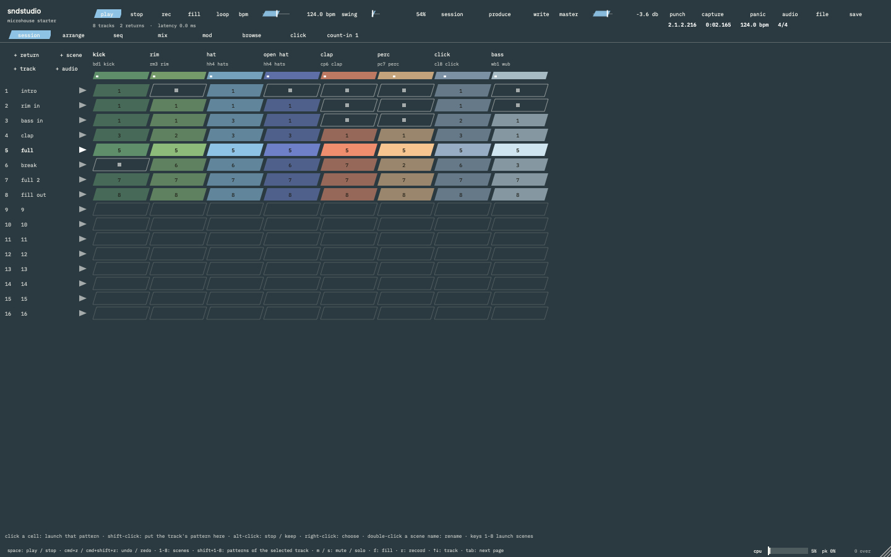
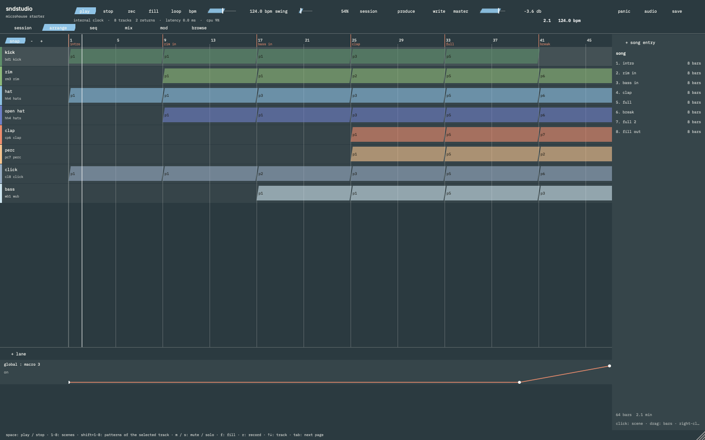
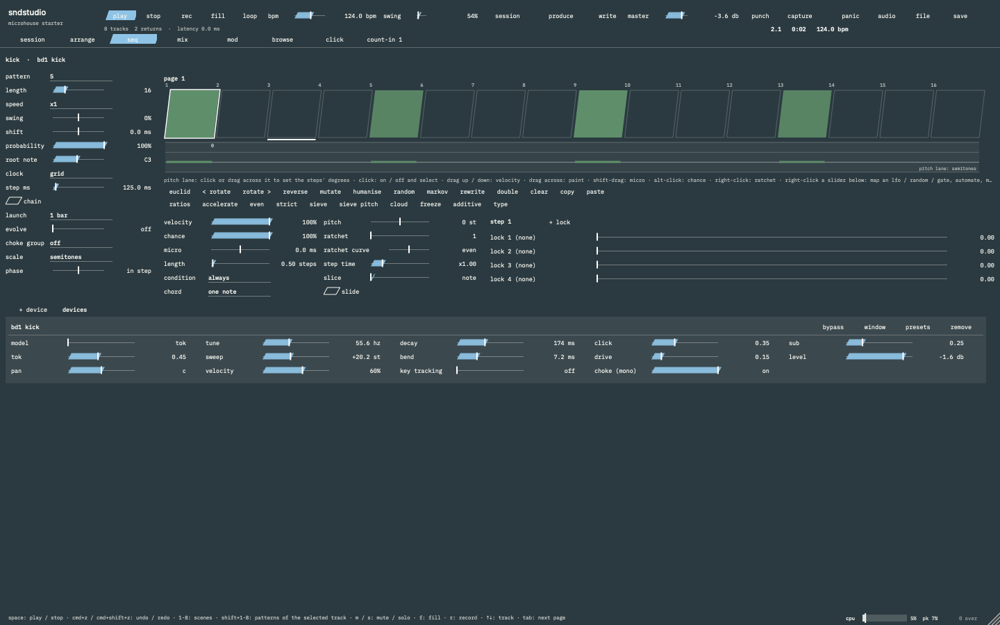
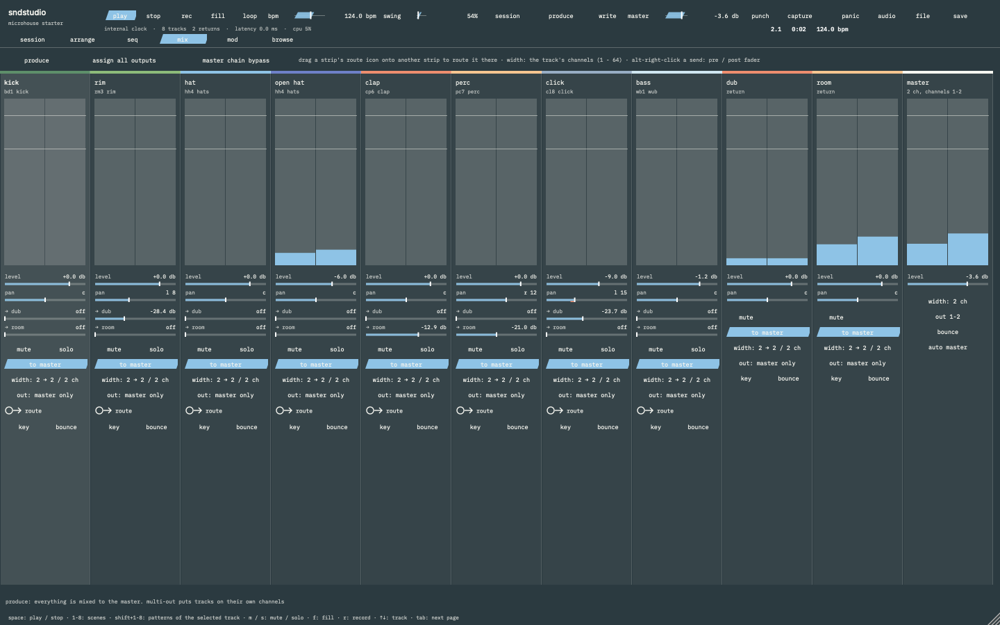
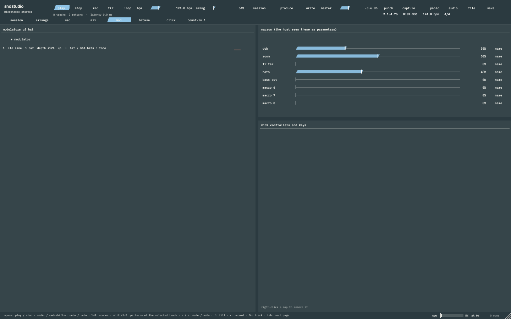
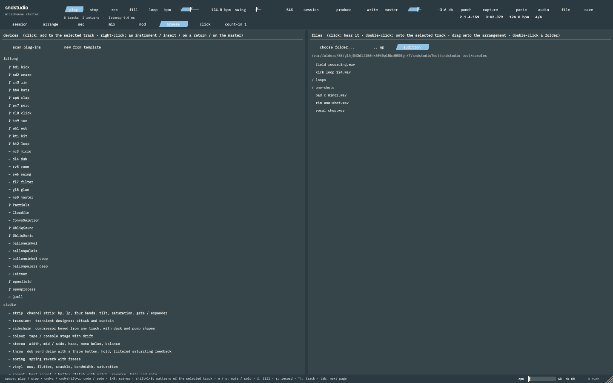

the faltung studio: tracks, scenes, song, sends, modulators, 128 outputs
manual · version 1.2.0 · november 2026
sndstudio is a studio for microhouse, rominimal, dub techno and the music around them, built out of the faltung suite: its drum engines, bass synth, effects and mastering bus are the devices, and around them a step sequencer that goes further than kt1, scenes and a song, a timeline, automation on everything, modulators on everything, sends and returns, a mixer whose channels can leave through 128 outputs, hosted VST3 / AU plug-ins, audio tracks, recording, resampling and stems.
It comes twice: faltung sndstudio (the microhouse devices and templates) and faltung deep sndstudio (the deep house
twin, the mirror-tree look). Each is a standalone app and a plug-in. A project (.fstudio) opens in both forms.
Two ways of working, switched in the header or the mixer: produce — everything is mixed inside, to a stereo master with the ms0 chain on it, and exported as a mastered wav and as stems; multi-out — every track, return and the master leave on their own output channels (64 stereo buses as a plug-in; any multichannel device in the standalone), and mixing and mastering happen in Ableton.
| page | what is there |
|---|---|
| session | tracks across, scenes down; every cell is a pattern of that track. Click a cell to launch it (quantised to the bar), the triangle launches the whole scene, keys 1–8 too. |
| arrange | the timeline: pattern clips and audio clips per track, markers, the loop region, the playhead; under it the automation lanes of the selected track; to the right the song (scenes in order with bar counts). |
| seq | the selected track: its pattern (1–64), length, speed, swing, shift, chance, root note, clock, chain; the 16-step grid (pages for longer patterns); the selected step's velocity, pitch, chance, ratchet, micro, length, condition, slide, slice and locks; the tools; the track's devices with every parameter as a slider. |
| mix | strips for the tracks, returns and master: meters (one bar per channel), level, pan, eight sends, mute / solo / rec, output channels, width, to master, routes, input, key. The produce / multi-out switch, assign all outputs, the master width and the master chain bypass. |
| mod | the modulators of the selected track (click one to edit it), the eight macros (named, seen by the host), the midi maps and midi learn. |
| browse | every device (faltung, studio, plug-ins) to add to the selected track, a return or the master; scan plug-ins; a file browser whose files drag onto the timeline or onto a sampler; new from template. |
.fstudio next to its audio folder. file → export master renders a 24-bit wav through the master chain with a true-peak limiter; export stems one wav per track.
Tracks are columns, scenes rows. A cell shows the pattern that scene launches on that track (1–64), a square for stop, nothing for keep playing. Click a cell to launch that pattern on that track at the next bar (launch in seq sets the quantisation: now, 1, 2 or 4 bars). Shift-click puts the track's current pattern in the cell; alt-click cycles stop / keep; right-click chooses. The triangle (or keys 1–8) launches the scene. Right-click a scene name to capture what is playing into it; double-click to rename. The white tick under a track header is its running step.
Track headers: click to select, right-click to rename, colour, move, duplicate or remove. + track adds an instrument track (a kick, change it in seq), + audio an audio track, + return a return (up to eight).

The ruler counts bars; the loop region is the strip under it (drag on the ruler to set it, l or the header to switch it on); shift-click the ruler for a marker. Each lane holds pattern clips (p1, p2 …) and audio clips (with their waveform). Drag a clip to move it, its right edge to change its length, alt-drag to copy, double-click an empty spot to add the track's current pattern for four bars, right-click a clip for its pattern, split, reverse, remove. snap keeps edits on the bar (or the beat when zoomed in); off, clips go where you drop them. + / - and cmd-wheel zoom.
Audio clips. Drop wav / aif / flac / mp3 files from the Finder or from the browser onto a lane (a new audio track if the lane is an instrument). Double-click a clip (or right-click → edit) for gain, fades, pitch, mode, stretch, start in file, reverse, loop. Modes: repitch (speed follows pitch, like a varispeed deck), stretch (length free, pitch kept, transient-preserving), warp to tempo (the clip fits its bars at the project tempo). Playback is sample accurate with cubic interpolation; the stretcher is a wsola that pins every transient to its place in time.
Automation. The lanes under the tracks belong to the selected track (and the globals: macros, tempo, swing, master). Add one with + lane or from any control's right-click. Click in a lane to add a point, drag it, alt-drag for the curve, double-click or right-click to delete; click the lane's name to switch it off, right-click it to remove it. With write on, moving a control while playing records points. Automation is the base value; modulators ride on top of it.
Song. The list on the right: scenes in order with bar counts. + song entry, click one to choose its scene, drag to change its bars, right-click to remove. The header's mode cycles session → song → arrange: in song mode the scenes play in order from bar 1; in arrange the clips on the timeline play.

| control | what it does |
|---|---|
| pattern | which of the track's 64 patterns is playing (launched at the next quantise point) |
| length | 1–64 steps; longer than 16 shows pages above the grid. Different lengths on different tracks = polymeter. |
| speed | x1/4 … x8: how fast the steps run, relative to 16ths |
| swing | added to the global swing for this track (±25%) |
| shift | the whole track earlier or later, in ms |
| probability | multiplies every step's chance |
| root note | the note a step with pitch 0 plays (drums track pitch from C3 when their key tracking is on; the bass from its root). The open-hat track in the template uses A#4, which plays hh4's open sound. |
| clock | grid: steps follow the tempo. free: every step lasts step ms whatever the tempo (off-grid sequences, Second Woman clocks). |
| chain | on: the patterns in the chain play in order (right-click the switch to type the chain: "1 1 2 3") |
| launch | launch quantisation of patterns and scenes |
Click a step to switch it on and select it, drag up / down for velocity, drag across to paint, shift-drag for micro-timing (± the global micro range, 12 ms by default), alt-click for chance (100 → 75 → 50 → 25%), right-click for ratchets. A step shows its pitch, ratchet, condition, slide, slice and how many locks it carries.
| control | what it does |
|---|---|
| velocity · pitch · chance | as named; pitch in semitones from the root note |
| ratchet | 1–8 hits inside the step, each a little softer |
| micro · length | timing offset; note length in steps (synths hold the note; drums ignore it) |
| condition | always · 1:2 … 4:4 · 1:8 · 8:8 (which pass of the pattern) · fill / not fill (the fill button or f) · first / not first (the first pass after a launch) · prev / not prev (whether the previous step played) |
| slide | the step's locked values glide to the next step that locks the same parameter |
| slice | for sampler tracks: which slice this step plays (otherwise the note) |
| lock 1–4 | parameter locks: + lock picks any parameter of the track's strip or devices and locks it at its current value for this step; drag the value. The lock holds until the next step that plays without it. A locked parameter shows a white bracket on its slider. |
euclid (hits over the length, rotated) · rotate · reverse · mutate (flips a few steps) · humanise (micro and velocity) · random · markov (a two-state walk) · rewrite (a rule: two hits in a row ratchet, a hit before a rest echoes) · double · clear · copy / paste (between tracks and patterns).
The track's instrument and inserts, every parameter as a slider in the house style. + device adds a faltung engine, a studio device or a plug-in (instruments replace the instrument, effects go on the chain). Each device has bypass, window (its own editor — the suite's plug-ins show their own looks, hosted plug-ins theirs), presets (the plug-in's factory presets) and remove; the sampler has load sample. Right-click any slider: map a modulator, automation lane, midi learn, macro, reset. The orange band under a slider is its modulation range; the dot at the left means it has a lane.

A strip per track, return and master. The meter has one bar per channel of the track's width. level (0.8 = 0 db, up to +12), pan (the first pair), sends 1–8 (one per return; right-click the output button to make a send pre-fader), mute · solo · rec (arm, audio tracks), to master (off: the track only feeds its routes and its own output channels), out (its own device channels; choosing one switches the mixer to multi-out), width ("2→2/2": what the first device reads → what the chain produces / the track's width; choose 1 … 64), route (copy this track, post fader, into another track's input over N channels with channel offsets; the mixer refuses a cycle), in (audio tracks: the device input channels, mono or stereo; resample the master or any track; monitoring off / in / auto), key (which track the sidechain devices on this track listen to).
The header row: produce / multi-out, assign all outputs (master on 1 … w, then every track and return consecutively, to-master off), master chain bypass, master width (2 … 64, as many meters), the master level. Routes are listed along the bottom.

Modulators belong to a track and target one of its parameters (or another modulator's rate). Make one from any control's right-click or + modulator; click one in the list to edit it, remove is in the popup. Sources: lfo (sine, triangle, ramps, square, wow, yoy, s&h, smooth random, drift, mpc shuffle, pulse with width; phase, skew, retrigger on each hit), random gate (on / off per period with a chance), random (a new value per period — with slew, a slewed random), envelope (attack / decay on each hit), follower (the track's own level), steps (16 values on a division), macro, velocity, per hit (a random value on each hit), midi cc, chaos (a logistic map). Rates are sync (divisions from 1/64 to 16 bars) or free (0.01–40 hz) — flipping the switch keeps the current rate. depth ±100%, polarity bipolar (around the base) / up / down, slew smooths every source. Several modulators on one parameter add up.
Macros: eight sliders the host sees as parameters; name them; map a parameter to one from its right-click (the macro sets it between the value it had and the top). Midi: right-click a control → midi learn, move a controller; the map is listed here (right-click to remove). Controllers also reach modulators of source midi cc.

Devices by family: the faltung (or faltung deep) instruments and effects, the studio devices, and every plug-in the scan found. Click one to add it to the selected track (instruments replace the instrument), right-click for a return, the master or a new track. scan plug-ins looks in the usual VST3 / AU folders (a plug-in that crashes the scan is skipped next time). Files: choose a folder, drag files onto the arrangement or onto an instrument track with a sampler; double-click a file to put it on the selected audio track at the playhead (or into the selected track's sampler). new from template: empty, microhouse / deep house starter, dub techno / dub house, long form (an eight-minute scaffold), multi-out to ableton.
Next to every faltung engine and effect, sndstudio adds its own devices. All have stable parameter ids (automation and locks keep working across versions),
run at any track width where that makes sense (the strip, colour, clip, transient, multiband and sidechain per channel; the stereo devices on the first pair) and
have a test in sndstudioTest.
| device | what it is |
|---|---|
| strip | channel strip: high-pass, low-pass, four parametric bands (low shelf / bell / high shelf), a tilt around 650 hz, saturation (anti-aliased), a gate / expander with ratio, attack, release and range for ghost-note shaping, output. |
| transient | transient designer: attack and sustain ±100%, speed, mix. |
| sidechain | a compressor keyed from any track (key on the strip; the master by default) or from itself; threshold, ratio, attack, release, knee, makeup, mix, range, a high-pass on the key; shapes: compressor, duck (the classic kick-ducked bass), pump with hold. |
| colour | a tape or console stage: drive, bias (even harmonics), hf loss, head bump, and drift — a slow random walk of gain and tone, different on every track. |
| stereo | width, mid and side levels, haas (a delay on the right side), mono below a frequency, balance, swap. |
| throw | the dub send delay: time synced or free (flipping keeps the time), feedback above 100% (the loop saturates), high- and low-pass inside the loop, saturation, wow, ping-pong; throw lets the input in (map it to a key for the momentary throw), hold freezes the loop. |
| spring | a spring reverb (dispersive allpass chains): tension, decay, tone, drip, mix, freeze for an infinite tail. |
| vinyl | wow and flutter, crackle (density and level), noise floor, bandwidth, low cut, saturation, mix. |
| repeat | beat repeat / buffer override: on a grid (synced or ms) with a chance, a slice of a length (synced or ms) repeats N times with a pitch decay per repeat, reverse chance, bits, rate divide, gate, variation; override forces it now. |
| grain | a granular cloud from the last two seconds of input: size, density, pitch, spray, jitter, reverse, window shape, spread, freeze. |
| multiband | three-band distortion (soft / fold / hard per band), crossovers, band levels, mix. |
| clip | digital clipper (hard / soft / fold), drive, ceiling, bits, rate divide, dc filter. |
| noise bed | white / pink / tape / brown noise added at a level, filtered, with slow drift and optional crackle. |
| tone | precision generator (instrument): sine, pulse (width), click, impulse, white, pink; exact frequency in hz or key tracking; a duration in ms or the note's gate; dc-free. |
| data | bursts of bits at a bit rate (bytes → pulses), from the note number or random on each hit, density, tone. |
| fm perc | four-operator fm percussion: ratios, levels, decays, three algorithms, feedback, pitch and sweep, noise, drive, key tracking. |
| sampler | one-shots, loops (while held) and slices: a sample cut on a grid or on its transients into up to 64 slices that steps address with their slice (or notes from C1); root, pitch, start / end, filter, adsr, gain, choke, reverse, velocity. Drop a file on it in the browser or on its track in the arrangement. |
produce: every track and return goes to the master; the master's chain (filter → glue → ms0 in the template; ms0 is bypassed until you want it, its auto listens to the track and sets a starting point) ends on the main output. Export the master as a wav (24-bit dithered or 32-bit float, true-peak limited at -1 dbtp if you like) and the stems.
multi-out: tracks and returns with an output channel go there instead of (or as well as, with to master) the master. assign all outputs puts the master on channels 1 … w, then every track and return on consecutive channels, to-master off. As a plug-in, Live shows the buses "out 3-4" … "out 127-128": make an audio track per pair with the plug-in's bus as its input and record. A pair that is not enabled in Live folds back into the main output so nothing is lost. The plug-in follows Live's tempo and position. From the standalone, choose a 128-channel virtual device (BlackHole 128ch) as the output in audio, set the same device as the input of Live's tracks, and switch master chain bypass on when the mastering happens there. The project remembers the mode.
A track's width is the width of its chain and its output, 1 … 64 channels, changed any time; clips and instruments feed channels 1–2 of it and the devices negotiate their widths along the chain. The workflow for an ambisonic session:
A stereo file on a 16-channel track stays a stereo clip: it feeds channels 1–2, the encoder spreads it; bypass the encoder and only 1–2 carry it. A device with fewer inputs than the incoming width reads the first ones; one with fewer outputs than the track width leaves the rest silent. Latency is compensated across routes (a route waits for the destination's arrival time), so an encoder with latency still lands with everything else. Hosted plug-ins get the bus layout that matches (stereo in, 16 out for an encoder; 16 in, 2 out for a decoder; ambisonic layouts for 4, 9, 16, 25, 36, 49, 64 channels, discrete otherwise).
audio (header, standalone) opens the device page: input and output device, sample rate, buffer size, which channels are enabled (up to 128 each way), midi inputs. Audio tracks pick their in: a mono or stereo pair of device inputs, the master (resampling) or any track; monitor off / in / auto (when armed) passes the input through the track's inserts. Arm the track (rec), press rec in the header (or r) and play: a clip is written as 32-bit wav into the project's audio folder, placed at the transport position with the device's input latency compensated; with the loop on and punch, only inside the loop. Stop ends the take; the clip appears on the timeline and plays back sample aligned. Recording from the master or a track while playing is resampling; render project to a new track (file menu / browse) does the same offline for the whole arrangement or the loop, 32-bit float, at bar 1 or the loop start, and equals the master export sample for sample. As a plug-in, recording takes the plug-in's own output only (hosts do not give instrument plug-ins audio inputs).
| what | how |
|---|---|
| export master | file menu: a wav through the master chain at the project sample rate, 24-bit with tpdf dither or 32-bit float, optionally true-peak limited at the ceiling; one bar of tail. |
| export stems | one wav per track (post fader), per used return and the master, into a folder; the same options. |
| export midi | the sequencer as a midi file, one track per track, conditions and chance resolved. |
| resample | an audio track with in = the master or a track records what plays; render project to a new track renders offline; a track's output can be bounced to a new audio track from its strip. |
| key | does |
|---|---|
| space | play / stop |
| 1–8 | launch scene 1–8 |
| shift 1–8 | launch pattern 1–8 on the selected track |
| m · s | mute / solo the selected track |
| f | fill, while held |
| r | record |
| l | loop |
| ↑ ↓ | select the previous / next track |
| return | stop the selected track at the next bar |
| tab | next page |
Everything in sndstudio that runs in time can follow the tempo or ignore it. The rule is the same everywhere: a sync setting counts in divisions of the bar (the list below), a free setting in hz, ms or seconds; flipping between them keeps the time it had as closely as the other side allows, so nothing jumps.
| what | on the grid | off the grid |
|---|---|---|
| a track's steps | clock grid: a step is a 16th times speed (x1/4 … x8) times the step's own step time | clock free: every step lasts step ms, whatever the tempo |
| a step's place | on its step | micro (shift-drag in the grid), the track's shift in ms, the tools ratios / accelerate |
| modulators | sync: 1/64 … 16 bars | free: 0.01 … 40 hz |
| fl7's lfo | rate divisions | the last entry of rate, free, and the free rate control (hz) |
| wb1 / sb1 wobble and steps | rate divisions | free as the last entry of the rate, with free rate / free time |
| mc3 | divisions | free, as before |
| throw, repeat | time / grid / slice on divisions | the same in ms |
| line, wear, skip | on the grid on: pass / loop / fragment on divisions | off: seconds or ms |
| audio clips | warp to tempo | repitch or stretch, snap off for placing them anywhere |
| the arrangement | snap on: bars (beats when zoomed in) | snap off; , and . nudge the clip you last touched by 5 ms |
The divisions, wherever a list of them appears: 1/64 · 1/32 · 1/32 d · 1/16 t · 1/16 · 3/32 · 1/16 d · 1/8 t · 1/8 · 1/8 d · 1/4 t · 1/4 · 1/4 d · 1/2 · 1 bar · 2 bars · 4 bars · 8 bars · 16 bars (d = dotted, t = triplet).
| control | what it does |
|---|---|
| evolve | off … 100%: on every pass a few steps change (a hit appears or goes, velocities drift) or come back to what is written; the pattern drifts around its written form and never far from it. freeze (tools) writes the current drift into the pattern. |
| choke group | off, a … h: a hit on one track of a group cuts the other tracks of that group (closed hat / open hat, chopped samples on several tracks). |
| control | what it does |
|---|---|
| step time | x0.25 … x4: how long this step lasts, in steps — a triplet next to a straight step, a long step after short ones. The pattern's length in time follows. |
| ratchet curve | even, or the hits of a ratchet speed up (crowd towards the end) or slow (spread out) |
| chord | one note · octave · fifth · minor · major · minor 7 · major 7 · minor 9 · sus 4 · stack of fourths, stacked on the step's note (synths, tone, sampler) |
| tool | what you type | what it does |
|---|---|---|
| ratios | 1 1 2/3 2/3 2/3 3/2 | one number per step: its step time. The series repeats over the length. |
| accelerate | 0.9 | every step lasts this many times the one before; the loop keeps its length (below 1: faster and faster, above 1: slower) |
| even | — | every step time back to x1 |
| strict | 2 0.5 | velocities on so many levels (1 = all alike, 2 = accent or not …), then one note length in steps for all |
| sieve | 3@0 | 4@1 | the steps a sieve keeps get a hit, the rest none: residue classes modulus@residue, | joins, & intersects, ! excludes |
| sieve pitch | 3@0 | 4@1 (random) | the sieve read as a scale in semitones; the hits climb it in order, or draw from it with random |
| cloud | 1 12 | a stochastic cloud: events per step (the times between them exponential), then the pitch range in semitones; velocities gaussian |
| freeze | — | writes the drift of evolve into the pattern |
Right-click any control: play it from a key: toggle or … while held, then press the key. The key then switches the control between its value and its far end (a mute, a send, the throw), and with write on the moves are written as automation. Mapped keys are listed on the mod page (right-click to remove); a mapped key no longer does its usual job (so map letters you do not need).
Right-click any slider (a device's, a strip's, the tempo, the swing, the master): map an lfo, map a random (a new value each period), map a slewed random, map a random gate (on / off). The modulator is made at once and its popup opens with its shape, rate (sync or free), depth and polarity. map something else holds the envelope, the step sequence, the follower and bounce (four ramps at unrelated rates, each turning round where it meets its neighbours: four related voltages that never repeat). A modulator's rate is itself a target, so modulators modulate modulators.
In an automation lane, shift-drag draws the curve by hand (a point every few pixels): arcs drawn on tone's frequency become glissandi, on an encoder's azimuth a path around the room.
| device | what it is |
|---|---|
| encoder | ambisonic encoder: a mono or stereo source to order 1 – 7 (acn channel order, sn3d), with azimuth, elevation, stereo width, order (as wide as the track, or 1 – 7) and gain; azimuth and elevation are natural targets for lanes and modulators. On a 16-channel track it reads the stereo clip or instrument and writes 16 channels (order 3). |
| decoder | ambisonics to a ring, a dome or a sphere of speakers (rotate, numbering clockwise or not, a speaker or a pair at the front); as many speakers as the track is wide (24 in the spatial template). |
| binaural | ambisonics to headphones, with head turn and head size (a spherical-head model, for placing things while you arrange; hosted decoders do measured-ear work). |
| line | on a wide track, each input channel becomes a line of sound travelling along the track's speakers: a pass on the grid or in seconds, a rest at the ends, legato from a hard switch to a melt, the figure (there and back, round, swinging, at random), a second line against the first, and a sieve choosing which speakers sound. |
| wear | a loop of the input that goes round and loses a little on every pass: first the highs, then dropouts, then level. Loop length on the grid or in seconds; record off keeps the loop going without new input; wear, dropouts, mix. |
| skip | an instrument that reads a sample like a skipping disc: a fragment repeats, the read point jumps on, back or anywhere; read errors drop out or hold a frame. intensity sets how broken it is; fragments on the grid or in ms; from / to bound the region; pitch; it plays until the next note or while the note is held; steps address places in the file. |
| tone (more) | a second tone, a difference in hz or a ratio away (1.22 by default), each tone on its own channel (one tone per channel), so the difference tone is made in the ear; a tuning for key-tracked notes: equal, just (5-limit), just (7-limit), the harmonic series. |
Also in the device list, without a scan: the suite's kit and loop (kt1, kt2) as track instruments, and the house's other plug-ins when they are installed (Partials, Cloudfin, openprocess, openfield, Leitner and the rest) — hosted as VST3 / AU like any plug-in.
A route into a track that already feeds the source closes a loop. The popup says so; if you accept, it becomes a feedback route: one buffer late and soft-limited, so the loop sings but cannot run away.
| what | where | what it does |
|---|---|---|
| capture | header | a new audio track records the master from now until you click again: a jam to cut up afterwards |
| bounce | a track's strip, or file → bounce | the track (offline, its whole arrangement or the loop) into a new audio track, or into a sampler on a new track, sliced |
| render | the master strip's bounce, or file → render the project into a new audio track | the whole project or the loop, through the master chain or before it, onto a new audio track |
| auto master | the master strip | puts ms0 on the master if it is not there, switches it (and the master chain) on, starts playback if stopped, listens to up to 20 s and sets ms0's starting point (click again to decide early). Not in faltung deep, which has no ms0 |
file → new from template (or browse → new from template). Each is a full project to start from.
| faltung sndstudio | faltung deep sndstudio |
|---|---|
| empty | empty |
| microhouse starter | deep house starter |
| dub techno | dub house |
| long form (rominimal) | long form (deep) |
| multi-out to ableton | multi-out to ableton |
| bass first (half time, 172) | bass first (half time, 172) |
| two-step (garage, 132) | two-step (garage, 132) |
| spatial (encoder, 24 speakers, binaural) | spatial (encoder, 24 speakers, binaural) |
| half-step (140) | half-step (140) |
bass first starts from the bass at 172 in half time; two-step is a garage skeleton at 132 with mpc-style swing; half-step a 140 frame with wb1 in front; spatial builds the encoder → decoder (24 speakers) → master and encoder → binaural chain described in the spatial chapter, with the master 24 wide.
Written from the devices themselves (sndstudioTest --dump-params), so names, ranges and defaults are exactly what the sliders show. The suite's engines (bd1 … ms0) are described control by control in faltung Manual.pdf; here is what each one offers inside the studio. Every parameter takes locks, lanes, modulators, macros, midi and keys. In faltung deep sndstudio the list is the same except: sb1 stabs in place of wb1, and no ms0 (the deep master chain is filter → glue). Deep-only device:
presets minor 9 stab · organ stab · electric piano · dub chord · warm pad · deep sub · round bass · plucked chord
| parameter | range | default |
|---|---|---|
| a wave | sine … hard | saw>square 30% |
| a width | 5% … 95% | 50% |
| a octave | -3 · -2 · -1 · 0 · +1 · +2 · +3 | 0 |
| a semi | -12 st … +12 st | 0 st |
| a fine | -100 ct … 100 ct | 0 ct |
| a level | 0% … 100% | 100% |
| a unison | 1 · 2 · 3 · 4 · 5 · 6 · 7 | 1 |
| a detune | 0% … 100% | 25% |
| a spread | 0% … 100% | 60% |
| b wave | sine … hard | square |
| b width | 5% … 95% | 50% |
| b octave | -3 · -2 · -1 · 0 · +1 · +2 · +3 | 0 |
| b semi | -12 st … +12 st | 0 st |
| b fine | -100 ct … 100 ct | 0 ct |
| b level | 0% … 100% | 35% |
| b unison | 1 · 2 · 3 · 4 · 5 · 6 · 7 | 1 |
| b detune | 0% … 100% | 25% |
| b spread | 0% … 100% | 60% |
| fm b>a | 0% … 100% | 0% |
| sub | 0% … 100% | 0% |
| sub wave | sine · round | sine |
| sub octave | -2 · -1 · 0 | -1 |
| noise | 0% … 100% | 0% |
| filter | lp24 · lp12 · bp · hp · notch | lp12 |
| cutoff | 20.0 hz … 20.0 khz | 900 hz |
| resonance | 0.00 … 1.00 | 0.30 |
| filter drive | 0.00 … 1.00 | 0.30 |
| key track | 0% … 100% | 50% |
| vowel | a … u | a |
| formant q | 0.00 … 1.00 | 0.45 |
| formant shift | -12 st … +12 st | 0 st |
| formant mix | 0% … 100% | 0% |
| comb tune | -24 st … +24 st | 0 st |
| comb feedback | -95% … +95% | +60% |
| comb mix | 0% … 100% | 0% |
| distortion | soft · fold · hard · tube · crush · smooth | soft |
| drive | 0.00 … 1.00 | 0.25 |
| dist tone | 1.20 khz … 20.0 khz | 11.4 khz |
| dist mix | 0% … 100% | 100% |
| order | filter > dist · dist > filter | filter > dist |
| wobble rate | 1/64 … free (20 choices) | 1/8 |
| wobble shape | sine · triangle · ramp down · ramp up · square · wow · yoy · random | sine |
| wobble retrigger | off / on | on |
| wobble phase | 0% … 100% | 0% |
| wob > cutoff | -6.0 oct … +6.0 oct | 0.0 oct |
| wob > vowel | -100% … +100% | 0% |
| wob > fm | 0% … 100% | 0% |
| wob > drive | 0% … 100% | 0% |
| wob > pitch | -24 st … +24 st | 0 st |
| wob > volume | 0% … 100% | 0% |
| wob > comb | -100% … +100% | 0% |
| env attack | 0 ms … 2.00 s | 1 ms |
| env decay | 5 ms … 4.00 s | 260 ms |
| env sustain | 0% … 100% | 0% |
| env release | 5 ms … 4.00 s | 200 ms |
| env > cutoff | -6.0 oct … +6.0 oct | +2.2 oct |
| env > pitch | -24 st … +24 st | 0 st |
| env > fm | 0% … 100% | 0% |
| env > vowel | -100% … +100% | 0% |
| amp attack | 0 ms … 2.00 s | 2 ms |
| amp decay | 5 ms … 4.00 s | 600 ms |
| amp sustain | 0% … 100% | 0% |
| amp release | 5 ms … 4.00 s | 300 ms |
| ott | 0% … 100% | 15% |
| ott time | 0.00 … 1.00 | 0.40 |
| voices | mono · poly | poly |
| legato | off / on | on |
| glide | 0 ms … 1.00 s | 0 ms |
| bend range | 0 st … +24 st | +2 st |
| mod wheel | off · wobble depth · wobble rate | off |
| velocity | 0% … 100% | 30% |
| width | 0% … 100% | 80% |
| level | -24.0 db … +6.0 db | -6.0 db |
| chord | off … deep stack (15 choices) | minor 9 |
| chord voicing | close · open · drop 2 | close |
| lfo 2 rate | 1/64 … 16 bars (19 choices) | 4 bars |
| lfo 2 sync | off / on | on |
| lfo 2 free rate | 0.01 hz … 40.0 hz | 1.00 hz |
| lfo 2 shape | sine · triangle · ramp down · ramp up · square · wow · yoy · random · smooth random | ramp up |
| lfo 2 retrigger | off / on | on |
| lfo 2 phase | 0% … 100% | 0% |
| lfo 2 mode | loop · one-shot | loop |
| lfo 2 skew | 0% … 100% | 50% |
| lfo 2 smooth | 0% … 100% | 0% |
| lfo 3 rate | 1/64 … 16 bars (19 choices) | 1/4 |
| lfo 3 sync | off / on | on |
| lfo 3 free rate | 0.01 hz … 40.0 hz | 1.00 hz |
| lfo 3 shape | sine · triangle · ramp down · ramp up · square · wow · yoy · random · smooth random | sine |
| lfo 3 retrigger | off / on | off |
| lfo 3 phase | 0% … 100% | 0% |
| lfo 3 mode | loop · one-shot | loop |
| lfo 3 skew | 0% … 100% | 50% |
| lfo 3 smooth | 0% … 100% | 0% |
| step 1 | 0% … 100% | 100% |
| step 2 | 0% … 100% | 20% |
| step 3 | 0% … 100% | 60% |
| step 4 | 0% … 100% | 10% |
| step 5 | 0% … 100% | 90% |
| step 6 | 0% … 100% | 30% |
| step 7 | 0% … 100% | 50% |
| step 8 | 0% … 100% | 0% |
| step 9 | 0% … 100% | 100% |
| step 10 | 0% … 100% | 40% |
| step 11 | 0% … 100% | 70% |
| step 12 | 0% … 100% | 20% |
| step 13 | 0% … 100% | 80% |
| step 14 | 0% … 100% | 10% |
| step 15 | 0% … 100% | 50% |
| step 16 | 0% … 100% | 30% |
| steps length | 1 … 16 | 16 |
| steps rate | 1/64 … free (20 choices) | 1/16 |
| steps glide | 0% … 100% | 15% |
| steps retrigger | off / on | on |
| mod 1 source | off · wobble · lfo 2 · lfo 3 · steps · mod env · amp env · velocity · mod wheel · note · random · aftertouch | off |
| mod 1 destination | off … steps rate (24 choices) | off |
| mod 1 amount | -100% … +100% | 0% |
| mod 2 source | off · wobble · lfo 2 · lfo 3 · steps · mod env · amp env · velocity · mod wheel · note · random · aftertouch | off |
| mod 2 destination | off … steps rate (24 choices) | off |
| mod 2 amount | -100% … +100% | 0% |
| mod 3 source | off · wobble · lfo 2 · lfo 3 · steps · mod env · amp env · velocity · mod wheel · note · random · aftertouch | off |
| mod 3 destination | off … steps rate (24 choices) | off |
| mod 3 amount | -100% … +100% | 0% |
| mod 4 source | off · wobble · lfo 2 · lfo 3 · steps · mod env · amp env · velocity · mod wheel · note · random · aftertouch | off |
| mod 4 destination | off … steps rate (24 choices) | off |
| mod 4 amount | -100% … +100% | 0% |
| mod 5 source | off · wobble · lfo 2 · lfo 3 · steps · mod env · amp env · velocity · mod wheel · note · random · aftertouch | off |
| mod 5 destination | off … steps rate (24 choices) | off |
| mod 5 amount | -100% … +100% | 0% |
| mod 6 source | off · wobble · lfo 2 · lfo 3 · steps · mod env · amp env · velocity · mod wheel · note · random · aftertouch | off |
| mod 6 destination | off … steps rate (24 choices) | off |
| mod 6 amount | -100% … +100% | 0% |
| mod 7 source | off · wobble · lfo 2 · lfo 3 · steps · mod env · amp env · velocity · mod wheel · note · random · aftertouch | off |
| mod 7 destination | off … steps rate (24 choices) | off |
| mod 7 amount | -100% … +100% | 0% |
| mod 8 source | off · wobble · lfo 2 · lfo 3 · steps · mod env · amp env · velocity · mod wheel · note · random · aftertouch | off |
| mod 8 destination | off … steps rate (24 choices) | off |
| mod 8 amount | -100% … +100% | 0% |
| wobble free rate | 0.020 hz … 40.00 hz | 2.00 hz |
| steps free time | 5.0 ms … 4.00 s | 125 ms |
presets tok · perlon thud · 909 short · sub sine · knock
| parameter | range | default |
|---|---|---|
| model | tok · thud · 909 · sine | tok |
| tune | 30.0 hz … 140 hz | 55.6 hz |
| decay | 35 ms … 1.60 s | 174 ms |
| click | 0.00 … 1.00 | 0.35 |
| sub | 0.00 … 1.00 | 0.25 |
| tok | 0.00 … 1.00 | 0.45 |
| sweep | +0.0 st … +48.0 st | +20.2 st |
| bend | 2.0 ms … 140 ms | 7.2 ms |
| drive | 0.00 … 1.00 | 0.15 |
| level | off … 6.0 db | -1.6 db |
| pan | l 50 … r 50 | c |
| velocity | 0% … 100% | 60% |
| key tracking | off / on | off |
| choke (mono) | off / on | on |
presets tuned · fm crack · brush · 808
| parameter | range | default |
|---|---|---|
| model | tuned · fm · brush · 808 | tuned |
| tune | 110 hz … 420 hz | 201 hz |
| decay | 40 ms … 900 ms | 139 ms |
| snap | 0.00 … 1.00 | 0.45 |
| body | 0.00 … 1.00 | 0.55 |
| noise | 0.00 … 1.00 | 0.55 |
| sweep | +0.0 st … +12.0 st | +2.4 st |
| tone | 1.80 khz … 13.0 khz | 5.34 khz |
| drive | 0.00 … 1.00 | 0.10 |
| level | off … 6.0 db | -4.8 db |
| pan | l 50 … r 50 | c |
| velocity | 0% … 100% | 60% |
| key tracking | off / on | off |
| choke (mono) | off / on | on |
presets tok · rimshot · woodblock · metal tick
| parameter | range | default |
|---|---|---|
| model | rim · wood · tok · metal | tok |
| tune | 180 hz … 2.40 khz | 593 hz |
| decay | 8.0 ms … 600 ms | 21 ms |
| click | 0.00 … 1.00 | 0.68 |
| body | 0.00 … 1.00 | 0.41 |
| noise | 0.00 … 1.00 | 0.12 |
| sweep | +0.0 st … +12.0 st | +3.6 st |
| hard | 0.00 … 1.00 | 0.55 |
| drive | 0.00 … 1.00 | 0.00 |
| level | off … 6.0 db | -4.8 db |
| pan | l 50 … r 50 | l 6 |
| velocity | 0% … 100% | 60% |
| key tracking | off / on | off |
| choke (mono) | off / on | off |
presets 808 hats · noise hats · ring · tick hats
| parameter | range | default |
|---|---|---|
| model | 808 · noise · ring · tick | 808 |
| tune | x0.50 … x2.00 | x1.00 |
| decay | 6.0 ms … 1.40 s | 34 ms |
| click | 0.00 … 1.00 | 0.30 |
| metal | 0.00 … 1.00 | 0.60 |
| air | 0.00 … 1.00 | 0.40 |
| chirp | +0.0 st … +12.0 st | +1.2 st |
| tone | 5.00 khz … 15.0 khz | 9.15 khz |
| drive | 0.00 … 1.00 | 0.00 |
| level | off … 6.0 db | -8.0 db |
| pan | l 50 … r 50 | r 7 |
| velocity | 0% … 100% | 60% |
| key tracking | off / on | off |
| choke (mono) | off / on | on |
| open decay | 6.0 ms … 1.40 s | 176 ms |
presets clap · snap · room clap · tight
| parameter | range | default |
|---|---|---|
| model | clap · snap · room · tight | snap |
| tune | 500 hz … 3.20 khz | 1.05 khz |
| decay | 30 ms … 1.00 s | 206 ms |
| snap | 0.00 … 1.00 | 0.50 |
| claps | 2 claps … 6 claps | 4 claps |
| noise | 0.00 … 1.00 | 0.45 |
| spread | 4.0 ms … 26 ms | 7.0 ms |
| tone | 0.00 … 1.00 | 0.45 |
| drive | 0.00 … 1.00 | 0.10 |
| level | off … 6.0 db | -4.8 db |
| pan | l 50 … r 50 | c |
| velocity | 0% … 100% | 60% |
| key tracking | off / on | off |
| choke (mono) | off / on | off |
presets conga · bongo · bell · glass
| parameter | range | default |
|---|---|---|
| model | conga · bongo · bell · glass | conga |
| tune | 60.0 hz … 1.40 khz | 212 hz |
| decay | 20 ms … 2.50 s | 85 ms |
| click | 0.00 … 1.00 | 0.50 |
| body | 0.00 … 1.00 | 0.50 |
| noise | 0.00 … 1.00 | 0.30 |
| sweep | +0.0 st … +12.0 st | +5.4 st |
| hard | 0.00 … 1.00 | 0.30 |
| drive | 0.00 … 1.00 | 0.00 |
| level | off … 6.0 db | -4.8 db |
| pan | l 50 … r 50 | r 2 |
| velocity | 0% … 100% | 60% |
| key tracking | off / on | on |
| choke (mono) | off / on | off |
presets tick · pop · dust · blip
| parameter | range | default |
|---|---|---|
| model | tick · pop · dust · blip | tick |
| tune | 300 hz … 14.0 khz | 1.15 khz |
| decay | 0.8 ms … 80 ms | 3.2 ms |
| click | 0.00 … 1.00 | 0.55 |
| res | 0.8 ms … 40 ms | 8.4 ms |
| dust | 0.00 … 1.00 | 0.10 |
| sweep | +0.0 st … +48.0 st | +9.6 st |
| tone | 30.0 hz … 4.00 khz | 271 hz |
| drive | 0.00 … 1.00 | 0.00 |
| level | off … 6.0 db | -4.8 db |
| pan | l 50 … r 50 | l 15 |
| velocity | 0% … 100% | 60% |
| key tracking | off / on | on |
| choke (mono) | off / on | off |
presets tom · blip · fm tom · low
| parameter | range | default |
|---|---|---|
| model | tom · blip · fm · low | tom |
| tune | 45.0 hz … 420 hz | 215 hz |
| decay | 50 ms … 1.60 s | 141 ms |
| click | 0.00 … 1.00 | 0.60 |
| body | 0.00 … 1.00 | 0.40 |
| noise | 0.00 … 1.00 | 0.20 |
| sweep | +0.0 st … +36.0 st | +0.0 st |
| bend | 3.0 ms … 220 ms | 11 ms |
| drive | 0.00 … 1.00 | 0.00 |
| level | off … 6.0 db | -10.2 db |
| pan | l 50 … r 50 | r 18 |
| velocity | 0% … 100% | 60% |
| key tracking | off / on | on |
| choke (mono) | off / on | off |
presets sub wob · square pump · wow · yoy · sub pressure · reese · fm growl · neuro growl · talk box · slow sweep wob · step wub · rate riser · neuro movement · talking steps · pressure growl · neuro stab
| parameter | range | default |
|---|---|---|
| a wave | sine … hard | saw |
| a width | 5% … 95% | 50% |
| a octave | -3 · -2 · -1 · 0 · +1 · +2 · +3 | 0 |
| a semi | -12 st … +12 st | 0 st |
| a fine | -100 ct … 100 ct | 0 ct |
| a level | 0% … 100% | 100% |
| a unison | 1 · 2 · 3 · 4 · 5 · 6 · 7 | 1 |
| a detune | 0% … 100% | 25% |
| a spread | 0% … 100% | 60% |
| b wave | sine … hard | square |
| b width | 5% … 95% | 50% |
| b octave | -3 · -2 · -1 · 0 · +1 · +2 · +3 | 0 |
| b semi | -12 st … +12 st | 0 st |
| b fine | -100 ct … 100 ct | 0 ct |
| b level | 0% … 100% | 0% |
| b unison | 1 · 2 · 3 · 4 · 5 · 6 · 7 | 1 |
| b detune | 0% … 100% | 25% |
| b spread | 0% … 100% | 60% |
| fm b>a | 0% … 100% | 0% |
| sub | 0% … 100% | 80% |
| sub wave | sine · round | sine |
| sub octave | -2 · -1 · 0 | -1 |
| noise | 0% … 100% | 0% |
| filter | lp24 · lp12 · bp · hp · notch | lp24 |
| cutoff | 20.0 hz … 20.0 khz | 260 hz |
| resonance | 0.00 … 1.00 | 0.35 |
| filter drive | 0.00 … 1.00 | 0.30 |
| key track | 0% … 100% | 50% |
| vowel | a … u | a |
| formant q | 0.00 … 1.00 | 0.45 |
| formant shift | -12 st … +12 st | 0 st |
| formant mix | 0% … 100% | 0% |
| comb tune | -24 st … +24 st | 0 st |
| comb feedback | -95% … +95% | +60% |
| comb mix | 0% … 100% | 0% |
| distortion | soft · fold · hard · tube · crush · smooth | soft |
| drive | 0.00 … 1.00 | 0.25 |
| dist tone | 1.20 khz … 20.0 khz | 11.4 khz |
| dist mix | 0% … 100% | 100% |
| order | filter > dist · dist > filter | filter > dist |
| wobble rate | 1/64 … free (20 choices) | 1/8 |
| wobble shape | sine · triangle · ramp down · ramp up · square · wow · yoy · random | sine |
| wobble retrigger | off / on | on |
| wobble phase | 0% … 100% | 0% |
| wob > cutoff | -6.0 oct … +6.0 oct | +4.0 oct |
| wob > vowel | -100% … +100% | 0% |
| wob > fm | 0% … 100% | 0% |
| wob > drive | 0% … 100% | 0% |
| wob > pitch | -24 st … +24 st | 0 st |
| wob > volume | 0% … 100% | 0% |
| wob > comb | -100% … +100% | 0% |
| env attack | 0 ms … 2.00 s | 1 ms |
| env decay | 5 ms … 4.00 s | 250 ms |
| env sustain | 0% … 100% | 0% |
| env release | 5 ms … 4.00 s | 200 ms |
| env > cutoff | -6.0 oct … +6.0 oct | 0.0 oct |
| env > pitch | -24 st … +24 st | 0 st |
| env > fm | 0% … 100% | 0% |
| env > vowel | -100% … +100% | 0% |
| amp attack | 0 ms … 2.00 s | 1 ms |
| amp decay | 5 ms … 4.00 s | 300 ms |
| amp sustain | 0% … 100% | 100% |
| amp release | 5 ms … 4.00 s | 80 ms |
| ott | 0% … 100% | 25% |
| ott time | 0.00 … 1.00 | 0.40 |
| voices | mono · poly | mono |
| legato | off / on | on |
| glide | 0 ms … 1.00 s | 40 ms |
| bend range | 0 st … +24 st | +2 st |
| mod wheel | off · wobble depth · wobble rate | off |
| velocity | 0% … 100% | 30% |
| width | 0% … 100% | 60% |
| level | -24.0 db … +6.0 db | -6.0 db |
| chord | off … deep stack (15 choices) | off |
| chord voicing | close · open · drop 2 | close |
| lfo 2 rate | 1/64 … 16 bars (19 choices) | 4 bars |
| lfo 2 sync | off / on | on |
| lfo 2 free rate | 0.01 hz … 40.0 hz | 1.00 hz |
| lfo 2 shape | sine · triangle · ramp down · ramp up · square · wow · yoy · random · smooth random | ramp up |
| lfo 2 retrigger | off / on | on |
| lfo 2 phase | 0% … 100% | 0% |
| lfo 2 mode | loop · one-shot | loop |
| lfo 2 skew | 0% … 100% | 50% |
| lfo 2 smooth | 0% … 100% | 0% |
| lfo 3 rate | 1/64 … 16 bars (19 choices) | 1/4 |
| lfo 3 sync | off / on | on |
| lfo 3 free rate | 0.01 hz … 40.0 hz | 1.00 hz |
| lfo 3 shape | sine · triangle · ramp down · ramp up · square · wow · yoy · random · smooth random | sine |
| lfo 3 retrigger | off / on | off |
| lfo 3 phase | 0% … 100% | 0% |
| lfo 3 mode | loop · one-shot | loop |
| lfo 3 skew | 0% … 100% | 50% |
| lfo 3 smooth | 0% … 100% | 0% |
| step 1 | 0% … 100% | 100% |
| step 2 | 0% … 100% | 20% |
| step 3 | 0% … 100% | 60% |
| step 4 | 0% … 100% | 10% |
| step 5 | 0% … 100% | 90% |
| step 6 | 0% … 100% | 30% |
| step 7 | 0% … 100% | 50% |
| step 8 | 0% … 100% | 0% |
| step 9 | 0% … 100% | 100% |
| step 10 | 0% … 100% | 40% |
| step 11 | 0% … 100% | 70% |
| step 12 | 0% … 100% | 20% |
| step 13 | 0% … 100% | 80% |
| step 14 | 0% … 100% | 10% |
| step 15 | 0% … 100% | 50% |
| step 16 | 0% … 100% | 30% |
| steps length | 1 … 16 | 16 |
| steps rate | 1/64 … free (20 choices) | 1/16 |
| steps glide | 0% … 100% | 15% |
| steps retrigger | off / on | on |
| mod 1 source | off · wobble · lfo 2 · lfo 3 · steps · mod env · amp env · velocity · mod wheel · note · random · aftertouch | off |
| mod 1 destination | off … steps rate (24 choices) | off |
| mod 1 amount | -100% … +100% | 0% |
| mod 2 source | off · wobble · lfo 2 · lfo 3 · steps · mod env · amp env · velocity · mod wheel · note · random · aftertouch | off |
| mod 2 destination | off … steps rate (24 choices) | off |
| mod 2 amount | -100% … +100% | 0% |
| mod 3 source | off · wobble · lfo 2 · lfo 3 · steps · mod env · amp env · velocity · mod wheel · note · random · aftertouch | off |
| mod 3 destination | off … steps rate (24 choices) | off |
| mod 3 amount | -100% … +100% | 0% |
| mod 4 source | off · wobble · lfo 2 · lfo 3 · steps · mod env · amp env · velocity · mod wheel · note · random · aftertouch | off |
| mod 4 destination | off … steps rate (24 choices) | off |
| mod 4 amount | -100% … +100% | 0% |
| mod 5 source | off · wobble · lfo 2 · lfo 3 · steps · mod env · amp env · velocity · mod wheel · note · random · aftertouch | off |
| mod 5 destination | off … steps rate (24 choices) | off |
| mod 5 amount | -100% … +100% | 0% |
| mod 6 source | off · wobble · lfo 2 · lfo 3 · steps · mod env · amp env · velocity · mod wheel · note · random · aftertouch | off |
| mod 6 destination | off … steps rate (24 choices) | off |
| mod 6 amount | -100% … +100% | 0% |
| mod 7 source | off · wobble · lfo 2 · lfo 3 · steps · mod env · amp env · velocity · mod wheel · note · random · aftertouch | off |
| mod 7 destination | off … steps rate (24 choices) | off |
| mod 7 amount | -100% … +100% | 0% |
| mod 8 source | off · wobble · lfo 2 · lfo 3 · steps · mod env · amp env · velocity · mod wheel · note · random · aftertouch | off |
| mod 8 destination | off … steps rate (24 choices) | off |
| mod 8 amount | -100% … +100% | 0% |
| wobble free rate | 0.020 hz … 40.00 hz | 2.00 hz |
| steps free time | 5.0 ms … 4.00 s | 125 ms |
presets a3 tok · perlon shuffle · bucharest · empty
| parameter | range | default |
|---|---|---|
| run (internal clock) | off / on | off |
| internal bpm | 60.00 bpm … 180.00 bpm | 124.00 bpm |
| swing | 50% … 75% | 54% |
| micro range | ±0.0 ms … ±40.0 ms | ±12.0 ms |
| pattern | a1 · a2 · a3 · a4 · a5 · a6 · a7 · a8 | a1 |
| master | -24.0 db … +6.0 db | -4.0 db |
| bd1 model | tok · thud · 909 · sine | tok |
| bd1 tune | 30.0 hz … 140 hz | 55.6 hz |
| bd1 decay | 35 ms … 1.60 s | 174 ms |
| bd1 click | 0.00 … 1.00 | 0.35 |
| bd1 sub | 0.00 … 1.00 | 0.25 |
| bd1 tok | 0.00 … 1.00 | 0.45 |
| bd1 sweep | +0.0 st … +48.0 st | +20.2 st |
| bd1 bend | 2.0 ms … 140 ms | 7.2 ms |
| bd1 drive | 0.00 … 1.00 | 0.15 |
| bd1 level | off … 6.0 db | -1.6 db |
| bd1 pan | l 50 … r 50 | c |
| bd1 velocity | 0% … 100% | 60% |
| bd1 length | 1 … 16 | 16 |
| bd1 probability | 0% … 100% | 100% |
| bd1 shift | -30.0 ms … +30.0 ms | 0.0 ms |
| bd1 mute | off / on | off |
| sd2 model | tuned · fm · brush · 808 | tuned |
| sd2 tune | 110 hz … 420 hz | 201 hz |
| sd2 decay | 40 ms … 900 ms | 139 ms |
| sd2 snap | 0.00 … 1.00 | 0.45 |
| sd2 body | 0.00 … 1.00 | 0.55 |
| sd2 noise | 0.00 … 1.00 | 0.55 |
| sd2 sweep | +0.0 st … +12.0 st | +2.4 st |
| sd2 tone | 1.80 khz … 13.0 khz | 5.34 khz |
| sd2 drive | 0.00 … 1.00 | 0.10 |
| sd2 level | off … 6.0 db | -4.8 db |
| sd2 pan | l 50 … r 50 | c |
| sd2 velocity | 0% … 100% | 60% |
| sd2 length | 1 … 16 | 16 |
| sd2 probability | 0% … 100% | 100% |
| sd2 shift | -30.0 ms … +30.0 ms | 0.0 ms |
| sd2 mute | off / on | off |
| rm3 model | rim · wood · tok · metal | tok |
| rm3 tune | 180 hz … 2.40 khz | 593 hz |
| rm3 decay | 8.0 ms … 600 ms | 21 ms |
| rm3 click | 0.00 … 1.00 | 0.68 |
| rm3 body | 0.00 … 1.00 | 0.41 |
| rm3 noise | 0.00 … 1.00 | 0.12 |
| rm3 sweep | +0.0 st … +12.0 st | +3.6 st |
| rm3 hard | 0.00 … 1.00 | 0.55 |
| rm3 drive | 0.00 … 1.00 | 0.00 |
| rm3 level | off … 6.0 db | -4.8 db |
| rm3 pan | l 50 … r 50 | l 6 |
| rm3 velocity | 0% … 100% | 60% |
| rm3 length | 1 … 16 | 16 |
| rm3 probability | 0% … 100% | 100% |
| rm3 shift | -30.0 ms … +30.0 ms | 0.0 ms |
| rm3 mute | off / on | off |
| hh4 model | 808 · noise · ring · tick | 808 |
| hh4 tune | x0.50 … x2.00 | x1.00 |
| hh4 decay | 6.0 ms … 1.40 s | 34 ms |
| hh4 click | 0.00 … 1.00 | 0.30 |
| hh4 metal | 0.00 … 1.00 | 0.60 |
| hh4 air | 0.00 … 1.00 | 0.40 |
| hh4 chirp | +0.0 st … +12.0 st | +1.2 st |
| hh4 tone | 5.00 khz … 15.0 khz | 9.15 khz |
| hh4 drive | 0.00 … 1.00 | 0.00 |
| hh4 level | off … 6.0 db | -8.0 db |
| hh4 pan | l 50 … r 50 | r 7 |
| hh4 velocity | 0% … 100% | 60% |
| hh4 length | 1 … 16 | 16 |
| hh4 probability | 0% … 100% | 100% |
| hh4 shift | -30.0 ms … +30.0 ms | 0.0 ms |
| hh4 mute | off / on | off |
| oh5 model | 808 · noise · ring · tick | 808 |
| oh5 tune | x0.50 … x2.00 | x1.00 |
| oh5 decay | 6.0 ms … 1.40 s | 34 ms |
| oh5 click | 0.00 … 1.00 | 0.30 |
| oh5 metal | 0.00 … 1.00 | 0.60 |
| oh5 air | 0.00 … 1.00 | 0.40 |
| oh5 chirp | +0.0 st … +12.0 st | +1.2 st |
| oh5 tone | 5.00 khz … 15.0 khz | 9.15 khz |
| oh5 drive | 0.00 … 1.00 | 0.00 |
| oh5 level | off … 6.0 db | -8.0 db |
| oh5 pan | l 50 … r 50 | r 7 |
| oh5 velocity | 0% … 100% | 60% |
| oh5 length | 1 … 16 | 16 |
| oh5 probability | 0% … 100% | 100% |
| oh5 shift | -30.0 ms … +30.0 ms | 0.0 ms |
| oh5 mute | off / on | off |
| cp6 model | clap · snap · room · tight | snap |
| cp6 tune | 500 hz … 3.20 khz | 1.05 khz |
| cp6 decay | 30 ms … 1.00 s | 206 ms |
| cp6 snap | 0.00 … 1.00 | 0.50 |
| cp6 claps | 2 claps … 6 claps | 4 claps |
| cp6 noise | 0.00 … 1.00 | 0.45 |
| cp6 spread | 4.0 ms … 26 ms | 7.0 ms |
| cp6 tone | 0.00 … 1.00 | 0.45 |
| cp6 drive | 0.00 … 1.00 | 0.10 |
| cp6 level | off … 6.0 db | -4.8 db |
| cp6 pan | l 50 … r 50 | c |
| cp6 velocity | 0% … 100% | 60% |
| cp6 length | 1 … 16 | 16 |
| cp6 probability | 0% … 100% | 100% |
| cp6 shift | -30.0 ms … +30.0 ms | 0.0 ms |
| cp6 mute | off / on | off |
| pc7 model | conga · bongo · bell · glass | conga |
| pc7 tune | 60.0 hz … 1.40 khz | 212 hz |
| pc7 decay | 20 ms … 2.50 s | 85 ms |
| pc7 click | 0.00 … 1.00 | 0.50 |
| pc7 body | 0.00 … 1.00 | 0.50 |
| pc7 noise | 0.00 … 1.00 | 0.30 |
| pc7 sweep | +0.0 st … +12.0 st | +5.4 st |
| pc7 hard | 0.00 … 1.00 | 0.30 |
| pc7 drive | 0.00 … 1.00 | 0.00 |
| pc7 level | off … 6.0 db | -4.8 db |
| pc7 pan | l 50 … r 50 | r 2 |
| pc7 velocity | 0% … 100% | 60% |
| pc7 length | 1 … 16 | 16 |
| pc7 probability | 0% … 100% | 100% |
| pc7 shift | -30.0 ms … +30.0 ms | 0.0 ms |
| pc7 mute | off / on | off |
| cl8 model | tick · pop · dust · blip | tick |
| cl8 tune | 300 hz … 14.0 khz | 1.15 khz |
| cl8 decay | 0.8 ms … 80 ms | 3.2 ms |
| cl8 click | 0.00 … 1.00 | 0.55 |
| cl8 res | 0.8 ms … 40 ms | 8.4 ms |
| cl8 dust | 0.00 … 1.00 | 0.10 |
| cl8 sweep | +0.0 st … +48.0 st | +9.6 st |
| cl8 tone | 30.0 hz … 4.00 khz | 271 hz |
| cl8 drive | 0.00 … 1.00 | 0.00 |
| cl8 level | off … 6.0 db | -4.8 db |
| cl8 pan | l 50 … r 50 | l 15 |
| cl8 velocity | 0% … 100% | 60% |
| cl8 length | 1 … 16 | 16 |
| cl8 probability | 0% … 100% | 100% |
| cl8 shift | -30.0 ms … +30.0 ms | 0.0 ms |
| cl8 mute | off / on | off |
| separate outputs | off / on | off |
presets straight · cut-up · stutter · sparse · pitched roll
| parameter | range | default |
|---|---|---|
| run (internal clock) | off / on | off |
| internal bpm | 60.00 bpm … 180.00 bpm | 124.00 bpm |
| swing | 50% … 75% | 54% |
| micro range | ±0.0 ms … ±40.0 ms | ±12.0 ms |
| pattern | a1 · a2 · a3 · a4 · a5 · a6 · a7 · a8 | a1 |
| master | -24.0 db … +6.0 db | +0.0 db |
| slices | 4 · 8 · 16 · 32 | 16 |
| slice mode | grid · onsets | grid |
| start | 0% … 100% | 0% |
| pitch | -24.00 st … +24.00 st | -0.00 st |
| gate | 2% … 100% | 100% |
| attack | 0.0 ms … 30.0 ms | 0.5 ms |
| release | 0.5 ms … 200.0 ms | 8.0 ms |
| tone | 300 hz … 20.0 khz | 20.0 khz |
| reverse chance | 0% … 100% | 0% |
| spread | 0% … 100% | 20% |
| level | off … 6.0 db | -2.1 db |
| velocity | 0% … 100% | 50% |
| fit loop to tempo | off / on | on |
| loop length | 1 beats … 16 beats | 4 beats |
| length | 1 … 16 | 16 |
| probability | 0% … 100% | 100% |
| shift | -30.0 ms … +30.0 ms | 0.0 ms |
| mute | off / on | off |
| clock curve | off · accel · decel · arch · bulge · wave · rand | off |
| curve amount | 0% … 100% | 50% |
| step 1 pitch | -24 st … +24 st | 0 st |
| step 2 pitch | -24 st … +24 st | 0 st |
| step 3 pitch | -24 st … +24 st | 0 st |
| step 4 pitch | -24 st … +24 st | 0 st |
| step 5 pitch | -24 st … +24 st | 0 st |
| step 6 pitch | -24 st … +24 st | 0 st |
| step 7 pitch | -24 st … +24 st | 0 st |
| step 8 pitch | -24 st … +24 st | 0 st |
| step 9 pitch | -24 st … +24 st | 0 st |
| step 10 pitch | -24 st … +24 st | 0 st |
| step 11 pitch | -24 st … +24 st | 0 st |
| step 12 pitch | -24 st … +24 st | 0 st |
| step 13 pitch | -24 st … +24 st | 0 st |
| step 14 pitch | -24 st … +24 st | 0 st |
| step 15 pitch | -24 st … +24 st | 0 st |
| step 16 pitch | -24 st … +24 st | 0 st |
presets grains · stutter 1/32 · clicks · reverse dust
| parameter | range | default |
|---|---|---|
| mode | cut · grain · click | grain |
| rate | 1/64 … free (20 choices) | 1/16 |
| free rate | 0.50 hz … 200.0 hz | 8.00 hz |
| density | 0% … 100% | 45% |
| size | 2.0 ms … 250.0 ms | 60.0 ms |
| pitch | -24.00 st … +24.00 st | -0.00 st |
| scatter | 0% … 100% | 30% |
| reverse | 0% … 100% | 0% |
| shape | 0.00 … 1.00 | 0.50 |
| hold | off / on | off |
| mix | 0% … 100% | 50% |
presets dub 3/16 · ping 1/8 d · bbd slap · runaway
| parameter | range | default |
|---|---|---|
| sync | off / on | on |
| division | 1/64 … 16 bars (19 choices) | 1/16 d |
| time | 2.0 ms … 2000 ms | 375 ms |
| feedback | 0% … 110% | 55% |
| age | 0.00 … 1.00 | 0.35 |
| wow | 0.00 … 1.00 | 0.20 |
| loop hp | 20.0 hz … 2.00 khz | 200 hz |
| loop lp | 500 hz … 20.0 khz | 3.50 khz |
| spread | 0% … 100% | 50% |
| mode | tape · bbd · clean | tape |
| freeze | off / on | off |
| send | 0% … 100% | 100% |
| mix | 0% … 100% | 35% |
presets small room · plate · gated air · chamber
| parameter | range | default |
|---|---|---|
| model | room · plate · air · chamber | room |
| size | 0% … 100% | 35% |
| decay | 0.10 s … 8.00 s | 0.70 s |
| predelay | 0.0 ms … 120.0 ms | 6.0 ms |
| damp | 0.00 … 1.00 | 0.50 |
| low cut | 20.0 hz … 1.00 khz | 160 hz |
| diffusion | 0.00 … 1.00 | 0.70 |
| modulation | 0.00 … 1.00 | 0.25 |
| gate | off … -12 db | off |
| width | 0% … 150% | 100% |
| mix | 0% … 100% | 22% |
presets mpc 56 · shuffle · push · drag · drunk
| parameter | range | default |
|---|---|---|
| template | straight · mpc · shuffle · push · drag · drunk | shuffle |
| swing | 50% … 75% | 56% |
| amount | 0% … 200% | 100% |
| humanize | 0.0 ms … 15.0 ms | 0.0 ms |
| accent | 0% … 100% | 0% |
| crossfade | 1.0 ms … 12.0 ms | 4.0 ms |
| step 1 | -50% … +50% | 0% |
| step 2 | -50% … +50% | 0% |
| step 3 | -50% … +50% | 0% |
| step 4 | -50% … +50% | 0% |
| step 5 | -50% … +50% | 0% |
| step 6 | -50% … +50% | 0% |
| step 7 | -50% … +50% | 0% |
| step 8 | -50% … +50% | 0% |
| step 9 | -50% … +50% | 0% |
| step 10 | -50% … +50% | 0% |
| step 11 | -50% … +50% | 0% |
| step 12 | -50% … +50% | 0% |
| step 13 | -50% … +50% | 0% |
| step 14 | -50% … +50% | 0% |
| step 15 | -50% … +50% | 0% |
| step 16 | -50% … +50% | 0% |
presets flat · low kill · lp sweep 2 bars · hp tension
| parameter | range | default |
|---|---|---|
| low | kill … +6.0 db | -0.0 db |
| mid | kill … +6.0 db | -0.0 db |
| high | kill … +6.0 db | -0.0 db |
| low / mid | 40.0 hz … 1.20 khz | 250 hz |
| mid / high | 600 hz … 14.0 khz | 2.50 khz |
| filter | lp 45.0 hz … hp 12.0 khz | off |
| resonance | 0.00 … 1.00 | 0.30 |
| drive | 0.00 … 1.00 | 0.10 |
| lfo rate | 1/64 … free (20 choices) | 1/2 |
| lfo depth | 0% … 100% | 0% |
| lfo shape | sine · triangle · square · s&h | sine |
| mix | 0% … 100% | 100% |
| lfo free rate | 0.010 hz … 40.00 hz | 0.250 hz |
presets glue 2:1 · drum crush · tape only
| parameter | range | default |
|---|---|---|
| threshold | -40.0 db … 0.0 db | -14.0 db |
| ratio | 1.5 · 2 · 4 · 10 | 2 |
| attack | 0.10 ms … 30.0 ms | 10.0 ms |
| release | 50 ms … 1200 ms | 200 ms |
| auto release | off / on | on |
| sidechain hp | 20.0 hz … 300 hz | 90.0 hz |
| makeup | -6.0 db … +18.0 db | 0.0 db |
| tape | 0.00 … 1.00 | 0.25 |
| head bump | 0.00 … 1.00 | 0.50 |
| hf loss | 0.00 … 1.00 | 0.30 |
| bias | 0.00 … 1.00 | 0.20 |
| mix | 0% … 100% | 100% |
| output | -18.0 db … +6.0 db | 0.0 db |
presets transparent · microhouse club · dense experimental · electroacoustic, dynamic · wide air, deep space · mono-safe low end · loud club · vinyl pre-master · dreamstate (from your mixes) · 16-bit export
| parameter | range | default |
|---|---|---|
| input trim | -24.0 db … +24.0 db | 0.0 db |
| listen | stereo · mono · side · swap | stereo |
| compare (bypass) | off / on | off |
| level-matched compare | off / on | on |
| dc filter | off / on | on |
| balance | l 100 … r 100 | c |
| loudness target | off · -8 lufs · -9 lufs (club) · -10 lufs · -11 lufs · -12 lufs · -14 lufs (streaming) · -16 lufs (apple) · -18 lufs (dynamic) · -23 lufs (broadcast) | off |
| eq on | off / on | on |
| eq 1 on | off / on | off |
| eq 1 type | bell · low shelf · high shelf · notch | low shelf |
| eq 1 freq | 20.0 hz … 20.0 khz | 40.0 hz |
| eq 1 gain | -18.0 db … +18.0 db | 0.0 db |
| eq 1 q | 0.10 … 18.00 | 0.70 |
| eq 1 channel | stereo · mid · side | stereo |
| eq 2 on | off / on | off |
| eq 2 type | bell · low shelf · high shelf · notch | bell |
| eq 2 freq | 20.0 hz … 20.0 khz | 120 hz |
| eq 2 gain | -18.0 db … +18.0 db | 0.0 db |
| eq 2 q | 0.10 … 18.00 | 0.70 |
| eq 2 channel | stereo · mid · side | stereo |
| eq 3 on | off / on | off |
| eq 3 type | bell · low shelf · high shelf · notch | bell |
| eq 3 freq | 20.0 hz … 20.0 khz | 300 hz |
| eq 3 gain | -18.0 db … +18.0 db | 0.0 db |
| eq 3 q | 0.10 … 18.00 | 0.70 |
| eq 3 channel | stereo · mid · side | stereo |
| eq 4 on | off / on | off |
| eq 4 type | bell · low shelf · high shelf · notch | bell |
| eq 4 freq | 20.0 hz … 20.0 khz | 700 hz |
| eq 4 gain | -18.0 db … +18.0 db | 0.0 db |
| eq 4 q | 0.10 … 18.00 | 0.70 |
| eq 4 channel | stereo · mid · side | stereo |
| eq 5 on | off / on | off |
| eq 5 type | bell · low shelf · high shelf · notch | bell |
| eq 5 freq | 20.0 hz … 20.0 khz | 1.50 khz |
| eq 5 gain | -18.0 db … +18.0 db | 0.0 db |
| eq 5 q | 0.10 … 18.00 | 0.70 |
| eq 5 channel | stereo · mid · side | stereo |
| eq 6 on | off / on | off |
| eq 6 type | bell · low shelf · high shelf · notch | bell |
| eq 6 freq | 20.0 hz … 20.0 khz | 3.50 khz |
| eq 6 gain | -18.0 db … +18.0 db | 0.0 db |
| eq 6 q | 0.10 … 18.00 | 0.70 |
| eq 6 channel | stereo · mid · side | stereo |
| eq 7 on | off / on | off |
| eq 7 type | bell · low shelf · high shelf · notch | bell |
| eq 7 freq | 20.0 hz … 20.0 khz | 8.00 khz |
| eq 7 gain | -18.0 db … +18.0 db | 0.0 db |
| eq 7 q | 0.10 … 18.00 | 0.70 |
| eq 7 channel | stereo · mid · side | stereo |
| eq 8 on | off / on | off |
| eq 8 type | bell · low shelf · high shelf · notch | high shelf |
| eq 8 freq | 20.0 hz … 20.0 khz | 14.0 khz |
| eq 8 gain | -18.0 db … +18.0 db | 0.0 db |
| eq 8 q | 0.10 … 18.00 | 0.70 |
| eq 8 channel | stereo · mid · side | stereo |
| high-pass on | off / on | off |
| high-pass freq | 10.0 hz … 500 hz | 22.0 hz |
| high-pass slope | 12 db · 24 db · 48 db · 96 db | 24 db |
| high-pass channel | stereo · mid · side | stereo |
| low-pass on | off / on | off |
| low-pass freq | 2.00 khz … 22.0 khz | 20.0 khz |
| low-pass slope | 12 db · 24 db · 48 db · 96 db | 24 db |
| low-pass channel | stereo · mid · side | stereo |
| dynamic eq on | off / on | on |
| dyn 1 on | off / on | off |
| dyn 1 channel | stereo · mid · side | mid |
| dyn 1 freq | 20.0 hz … 20.0 khz | 400 hz |
| dyn 1 q | 0.30 … 12.00 | 1.40 |
| dyn 1 threshold | -60.0 db … 0.0 db | -30.0 db |
| dyn 1 range | -18.0 db … +12.0 db | -4.0 db |
| dyn 1 attack | 0.5 ms … 100 ms | 10 ms |
| dyn 1 release | 10 ms … 1000 ms | 120 ms |
| dyn 2 on | off / on | off |
| dyn 2 channel | stereo · mid · side | mid |
| dyn 2 freq | 20.0 hz … 20.0 khz | 3.00 khz |
| dyn 2 q | 0.30 … 12.00 | 1.40 |
| dyn 2 threshold | -60.0 db … 0.0 db | -30.0 db |
| dyn 2 range | -18.0 db … +12.0 db | -4.0 db |
| dyn 2 attack | 0.5 ms … 100 ms | 10 ms |
| dyn 2 release | 10 ms … 1000 ms | 120 ms |
| multiband on | off / on | on |
| crossover 1 | 30.0 hz … 300 hz | 80.0 hz |
| crossover 2 | 150 hz … 2.00 khz | 350 hz |
| crossover 3 | 1.00 khz … 12.0 khz | 4.00 khz |
| sub threshold | -60.0 db … 0.0 db | -18.0 db |
| sub ratio | 1.00:1 … 4.00:1 | 1.50:1 |
| sub attack | 1.0 ms … 200 ms | 40 ms |
| sub release | 20 ms … 1000 ms | 220 ms |
| sub gain | -12.0 db … +12.0 db | 0.0 db |
| sub width | 0% … 200% | 0% |
| sub solo | off / on | off |
| low-mid threshold | -60.0 db … 0.0 db | -18.0 db |
| low-mid ratio | 1.00:1 … 4.00:1 | 1.50:1 |
| low-mid attack | 1.0 ms … 200 ms | 25 ms |
| low-mid release | 20 ms … 1000 ms | 150 ms |
| low-mid gain | -12.0 db … +12.0 db | 0.0 db |
| low-mid width | 0% … 200% | 85% |
| low-mid solo | off / on | off |
| mid-high threshold | -60.0 db … 0.0 db | -18.0 db |
| mid-high ratio | 1.00:1 … 4.00:1 | 1.50:1 |
| mid-high attack | 1.0 ms … 200 ms | 25 ms |
| mid-high release | 20 ms … 1000 ms | 150 ms |
| mid-high gain | -12.0 db … +12.0 db | 0.0 db |
| mid-high width | 0% … 200% | 100% |
| mid-high solo | off / on | off |
| high threshold | -60.0 db … 0.0 db | -18.0 db |
| high ratio | 1.00:1 … 4.00:1 | 1.50:1 |
| high attack | 1.0 ms … 200 ms | 25 ms |
| high release | 20 ms … 1000 ms | 150 ms |
| high gain | -12.0 db … +12.0 db | 0.0 db |
| high width | 0% … 200% | 110% |
| high solo | off / on | off |
| imaging on | off / on | on |
| air (top-band width) | 0% … 100% | 0% |
| mid level | -12.0 db … +12.0 db | 0.0 db |
| side level | -12.0 db … +12.0 db | 0.0 db |
| saturation on | off / on | off |
| saturation curve | tape · tube · soft clip · smooth | tape |
| saturation focus | full · lows · highs · ends (avoid 200-2k) | full |
| saturation drive | 0.0 db … +18.0 db | +3.0 db |
| saturation mix | 0% … 100% | 100% |
| ambience on | off / on | off |
| ambience level | -60.0 db … -6.0 db | -30.0 db |
| ambience size | 0% … 100% | 30% |
| ambience decay | 0.10 s … 3.00 s | 0.60 s |
| ambience high-pass | 40.0 hz … 1.00 khz | 300 hz |
| ambience low-pass | 2.00 khz … 20.0 khz | 10.0 khz |
| ambience width | 0% … 150% | 100% |
| glue on | off / on | on |
| glue threshold | -40.0 db … 0.0 db | -16.0 db |
| glue ratio | 1.00:1 … 4.00:1 | 2.00:1 |
| glue attack | 0.1 ms … 50 ms | 20 ms |
| glue release | 50 ms … 1200 ms | 150 ms |
| glue auto release | off / on | on |
| glue makeup | -6.0 db … +12.0 db | +0.0 db |
| glue mix | 0% … 100% | 100% |
| clipper on | off / on | off |
| clipper drive | 0.0 db … +12.0 db | +1.0 db |
| clipper softness | 0% … 100% | 50% |
| limiter on | off / on | on |
| limiter oversampling | off · 2x · 4x · 8x | 4x |
| limiter stereo link | 0% … 100% | 100% |
| limiter gain | 0.0 db … +18.0 db | 0.0 db |
| ceiling (true peak) | -6.0 dbtp … 0.0 dbtp | -1.0 dbtp |
| limiter release | 10 ms … 1000 ms | 120 ms |
| limiter auto release | off / on | on |
| limiter lookahead | 0.5 ms … 5.0 ms | 3.0 ms |
| output | -24.0 db … +6.0 db | +0.0 db |
| dither | off · 24 bit · 16 bit | off |
| noise shaping | off / on | off |
channel strip: hp, lp, four bands, tilt, saturation, gate / expander.
| parameter | range | default |
|---|---|---|
| high-pass on | off / on | off |
| high-pass | 20.0 hz … 500 hz | 60.0 hz |
| low-pass on | off / on | off |
| low-pass | 2.00 khz … 20.0 khz | 18.0 khz |
| band 1 on | off / on | off |
| band 1 freq | 20.0 hz … 20.0 khz | 90.0 hz |
| band 1 gain | -18.0 db … +18.0 db | 0.0 db |
| band 1 q | 0.20 … 12.00 | 0.80 |
| band 1 type | low shelf · bell · high shelf | low shelf |
| band 2 on | off / on | off |
| band 2 freq | 20.0 hz … 20.0 khz | 300 hz |
| band 2 gain | -18.0 db … +18.0 db | 0.0 db |
| band 2 q | 0.20 … 12.00 | 0.80 |
| band 2 type | low shelf · bell · high shelf | bell |
| band 3 on | off / on | off |
| band 3 freq | 20.0 hz … 20.0 khz | 1.80 khz |
| band 3 gain | -18.0 db … +18.0 db | 0.0 db |
| band 3 q | 0.20 … 12.00 | 0.80 |
| band 3 type | low shelf · bell · high shelf | bell |
| band 4 on | off / on | off |
| band 4 freq | 20.0 hz … 20.0 khz | 8.00 khz |
| band 4 gain | -18.0 db … +18.0 db | 0.0 db |
| band 4 q | 0.20 … 12.00 | 0.80 |
| band 4 type | low shelf · bell · high shelf | high shelf |
| tilt | -6.0 db … +6.0 db | 0.0 db |
| saturation | 0% … 100% | 0% |
| gate threshold | -80.0 db … 0.0 db | -80.0 db |
| gate ratio | 1:1.0 … 1:8.0 | 1:1.0 |
| gate attack | 0.1 ms … 50 ms | 1.0 ms |
| gate release | 5.0 ms … 1.00 s | 80 ms |
| gate range | -80.0 db … 0.0 db | -60.0 db |
| output | -24.0 db … +12.0 db | +0.0 db |
transient designer: attack and sustain.
| parameter | range | default |
|---|---|---|
| attack | -100% … 100% | 0% |
| sustain | -100% … 100% | 0% |
| speed | 0% … 100% | 50% |
| mix | 0% … 100% | 100% |
compressor keyed from any track, with duck and pump shapes.
| parameter | range | default |
|---|---|---|
| threshold | -60.0 db … 0.0 db | -24.0 db |
| ratio | 1.0:1 … 20.0:1 | 4.0:1 |
| attack | 0.1 ms … 100 ms | 5.0 ms |
| release | 10 ms … 2.00 s | 120 ms |
| knee | 0.0 db … +18.0 db | +6.0 db |
| makeup | -12.0 db … +24.0 db | +0.0 db |
| mix | 0% … 100% | 100% |
| range | -60.0 db … 0.0 db | -60.0 db |
| key | internal · external (key track) | external (key track) |
| key high-pass | 20.0 hz … 1.00 khz | 80.0 hz |
| shape | compressor · duck · pump (hold) | compressor |
| hold | 1.0 ms … 500 ms | 60 ms |
tape / console stage with drift.
| parameter | range | default |
|---|---|---|
| mode | tape · console | tape |
| drive | 0% … 100% | 20% |
| bias | 0% … 100% | 10% |
| hf loss | 0% … 100% | 20% |
| head bump | 0% … 100% | 30% |
| drift | 0% … 100% | 20% |
| mix | 0% … 100% | 100% |
width, mid / side, haas, mono below, balance.
| parameter | range | default |
|---|---|---|
| width | 0% … 200% | 100% |
| mid | -12.0 db … +12.0 db | 0.0 db |
| side | -12.0 db … +12.0 db | 0.0 db |
| haas | 0.0 ms … 30 ms | 0.0 ms |
| mono below | 0.0 hz … 400 hz | 0.0 hz |
| balance | -100% … 100% | 0% |
| swap | off / on | off |
dub send delay with a throw button, hold, filtered saturating feedback.
| parameter | range | default |
|---|---|---|
| sync | off / on | on |
| division | 1/64 … 16 bars (19 choices) | 1/8 d |
| time | 1.0 ms … 3.00 s | 375 ms |
| feedback | 0% … 110% | 60% |
| loop hp | 20.0 hz … 2.00 khz | 150 hz |
| loop lp | 500 hz … 20.0 khz | 4.00 khz |
| saturation | 0% … 100% | 30% |
| wow | 0% … 100% | 15% |
| ping-pong | 0% … 100% | 60% |
| mix | 0% … 100% | 100% |
| throw (input in) | off / on | on |
| hold | off / on | off |
| input | 0% … 100% | 100% |
spring reverb with freeze.
| parameter | range | default |
|---|---|---|
| tension | 0% … 100% | 50% |
| decay | 0% … 100% | 50% |
| tone | 0% … 100% | 50% |
| drip | 0% … 100% | 50% |
| mix | 0% … 100% | 30% |
| freeze | off / on | off |
wow, flutter, crackle, bandwidth, saturation.
| parameter | range | default |
|---|---|---|
| wow | 0% … 100% | 30% |
| wow rate | 0% … 100% | 50% |
| flutter | 0% … 100% | 20% |
| crackle | 0% … 100% | 30% |
| crackle level | 0% … 100% | 30% |
| noise floor | 0% … 100% | 10% |
| bandwidth | 0% … 100% | 60% |
| low cut | 0% … 100% | 10% |
| saturation | 0% … 100% | 30% |
| mix | 0% … 100% | 100% |
beat repeat / buffer glitch with pitch, reverse, bits and rate.
| parameter | range | default |
|---|---|---|
| sync | off / on | on |
| grid | 1/64 … 16 bars (19 choices) | 1/16 |
| grid ms | 5.0 ms … 2.00 s | 125 ms |
| length | 1/64 … 16 bars (19 choices) | 1/16 |
| length ms | 5.0 ms … 2.00 s | 125 ms |
| chance | 0% … 100% | 30% |
| repeats | 1 … 32 | 4 |
| pitch decay | -12.0 st … +12.0 st | 0.0 st |
| reverse | 0% … 100% | 0% |
| bits | 2 bit … 24 bit | 24 bit |
| rate divide | 1/1 … 1/64 | 1/1 |
| gate | 0% … 100% | 100% |
| mix | 0% … 100% | 100% |
| override (repeat now) | off / on | off |
| variation | 0% … 100% | 0% |
granular cloud from the live input.
| parameter | range | default |
|---|---|---|
| size | 5.0 ms … 500 ms | 80 ms |
| density | 0% … 100% | 50% |
| pitch | -24.0 st … +24.0 st | 0.0 st |
| spray | 0% … 100% | 30% |
| jitter | 0% … 100% | 20% |
| reverse | 0% … 100% | 0% |
| shape | 0% … 100% | 50% |
| mix | 0% … 100% | 50% |
| freeze | off / on | off |
| spread | 0% … 100% | 50% |
three-band distortion.
| parameter | range | default |
|---|---|---|
| low / mid | 40.0 hz … 1.00 khz | 200 hz |
| mid / high | 800 hz … 12.0 khz | 2.50 khz |
| low drive | 0% … 100% | 30% |
| low mode | soft · fold · hard | soft |
| low level | -24.0 db … +12.0 db | +0.0 db |
| mid drive | 0% … 100% | 30% |
| mid mode | soft · fold · hard | soft |
| mid level | -24.0 db … +12.0 db | +0.0 db |
| high drive | 0% … 100% | 30% |
| high mode | soft · fold · hard | soft |
| high level | -24.0 db … +12.0 db | +0.0 db |
| mix | 0% … 100% | 100% |
digital clipper, bits and rate.
| parameter | range | default |
|---|---|---|
| drive | 0.0 db … +36.0 db | 0.0 db |
| ceiling | -24.0 db … 0.0 db | 0.0 db |
| bits | 2 bit … 24 bit | 24 bit |
| rate divide | 1/1 … 1/64 | 1/1 |
| mode | hard · soft · fold | hard |
| mix | 0% … 100% | 100% |
| dc filter | off / on | on |
tape hiss / noise floor with drift and crackle.
| parameter | range | default |
|---|---|---|
| colour | white · pink · tape · brown | tape |
| level | -80.0 db … 0.0 db | -40.0 db |
| high-pass | 20.0 hz … 2.00 khz | 100.0 hz |
| low-pass | 1.00 khz … 20.0 khz | 9.00 khz |
| drift | 0% … 100% | 30% |
| crackle | 0% … 100% | 0% |
ambisonic encoder: mono / stereo to order 1 - 7 (acn, sn3d).
| parameter | range | default |
|---|---|---|
| azimuth | 180° right … 180° left | front |
| elevation | -90° … 90° | 0° |
| stereo width | 0° … 180° | 60° |
| order | as wide as the track · 1 (4 ch) · 2 (9 ch) · 3 (16 ch) · 4 (25 ch) · 5 (36 ch) · 6 (49 ch) · 7 (64 ch) | as wide as the track |
| gain | -24.0 db … +12.0 db | +0.0 db |
ambisonic decoder to a ring, dome or sphere of speakers.
| parameter | range | default |
|---|---|---|
| speakers | ring · dome · sphere | ring |
| rotate | -180° … 180° | 0° |
| numbering | anticlockwise · clockwise | clockwise |
| front | a speaker at the front · a pair around the front | a speaker at the front |
| gain | -24.0 db … +12.0 db | +0.0 db |
ambisonics to headphones.
| parameter | range | default |
|---|---|---|
| head turn | 180° right … 180° left | ahead |
| head size | 80% … 120% | 100% |
| gain | -24.0 db … +12.0 db | +0.0 db |
lines of sound travelling through the speakers of a wide track.
| parameter | range | default |
|---|---|---|
| pass on the grid | off / on | off |
| pass | 1/64 … 16 bars (19 choices) | 2 bars |
| pass time | 0.05 s … 60.0 s | 4.00 s |
| rest | 0% … 90% | 0% |
| legato | 0% … 100% | 50% |
| figure | there and back · round · swinging · at random | there and back |
| second line against the first | off / on | on |
| speakers | every speaker · 2@0 · 3@0 | 4@1 · 5@0 | 7@3 · 3@1 | 5@2 | 7@0 | every speaker |
| level | -24.0 db … +12.0 db | +0.0 db |
a loop of the input that wears out a little on every pass.
| parameter | range | default |
|---|---|---|
| sync | off / on | on |
| loop | 1/64 … 16 bars (19 choices) | 1 bar |
| loop time | 50 ms … 16.00 s | 2.00 s |
| record | off / on | on |
| wear | 0% … 100% | 30% |
| dropouts | 0% … 100% | 30% |
| mix | 0% … 100% | 100% |
| level | -24.0 db … +12.0 db | +0.0 db |
a sample read like a skipping disc: fragments repeat, the read point jumps.
| parameter | range | default |
|---|---|---|
| intensity | 0% … 100% | 50% |
| fragments on the grid | off / on | off |
| fragment | 1/64 … 16 bars (19 choices) | 1/16 |
| fragment length | x0.25 … x4.00 | x1.00 |
| from | 0% … 100% | 0% |
| to | 0% … 100% | 100% |
| pitch | -24.0 st … +24.0 st | 0.0 st |
| read errors | 0% … 100% | 50% |
| plays | until the next note · while the note is held | until the next note |
| level | -24.0 db … +12.0 db | +0.0 db |
precision sine / pulse / click / impulse / noise generator.
| parameter | range | default |
|---|---|---|
| wave | sine · pulse · click · impulse · white · pink | sine |
| frequency | 0.100 hz … 20000.000 hz | 1000.000 hz |
| pulse width | 1% … 99% | 50% |
| key tracking | off / on | off |
| gate (note length) | off / on | off |
| duration | 0.1 ms … 10.00 s | 10 ms |
| level | -60.0 db … 0.0 db | -12.0 db |
| attack | 0.0 ms … 100 ms | 0.0 ms |
| second tone | off · a difference away · a ratio away | off |
| difference | 0.10 hz … 2000.00 hz | 40.00 hz |
| ratio | 1.010 … 2.000 | 1.220 |
| one tone per channel | 0% … 100% | 100% |
| tuning | equal · just (5-limit) · just (7-limit) · harmonic series | equal |
byte-to-pulse bursts.
| parameter | range | default |
|---|---|---|
| bit rate | 50 bit/s … 20000 bit/s | 2000 bit/s |
| bits per hit | 1 … 512 | 64 |
| density | 0% … 100% | 50% |
| pattern | from the note · random each hit | from the note |
| level | -60.0 db … 0.0 db | -12.0 db |
| tone | 0% … 100% | 100% |
four-operator fm percussion.
presets init · fm kick · tom · bell · snare · ring hat · wood · zap · glass
| parameter | range | default |
|---|---|---|
| op 1 ratio | x0.25 … x16.00 | x1.00 |
| op 1 level | 0% … 100% | 100% |
| op 1 decay | 5.0 ms … 3.00 s | 400 ms |
| op 2 ratio | x0.25 … x16.00 | x2.00 |
| op 2 level | 0% … 100% | 60% |
| op 2 decay | 5.0 ms … 3.00 s | 250 ms |
| op 3 ratio | x0.25 … x16.00 | x3.50 |
| op 3 level | 0% … 100% | 30% |
| op 3 decay | 5.0 ms … 3.00 s | 150 ms |
| op 4 ratio | x0.25 … x16.00 | x7.00 |
| op 4 level | 0% … 100% | 0% |
| op 4 decay | 5.0 ms … 3.00 s | 100 ms |
| algorithm | 4>3>2>1 · 2+3+4>1 · 2>1 and 4>3 | 4>3>2>1 |
| feedback | 0% … 100% | 10% |
| pitch | 30.0 hz … 2.00 khz | 244.949 hz |
| sweep | 0% … 100% | 30% |
| sweep time | 1.0 ms … 500 ms | 40 ms |
| noise | 0% … 100% | 0% |
| noise decay | 5.0 ms … 2.00 s | 100 ms |
| drive | 0% … 100% | 10% |
| key tracking | off / on | on |
| level | -24.0 db … +6.0 db | -6.0 db |
| morph to | init · fm kick · tom · bell · snare · ring hat · wood · zap · glass | bell |
| morph | 0% … 100% | 0% |
one-shots, loops and slices to steps.
| parameter | range | default |
|---|---|---|
| mode | one-shot · loop · slices | one-shot |
| root note | C-2 … G8 | C3 |
| pitch | -24.0 st … +24.0 st | 0.0 st |
| start | 0% … 100% | 0% |
| end | 0% … 100% | 100% |
| slices | 1 … 64 | 16 |
| slice mode | grid · onsets | grid |
| cutoff | 20.0 hz … 20.0 khz | 20.0 khz |
| resonance | 0% … 100% | 10% |
| attack | 0.0 ms … 2.00 s | 1.0 ms |
| decay | 1.0 ms … 4.00 s | 400 ms |
| sustain | 0% … 100% | 100% |
| release | 1.0 ms … 4.00 s | 30 ms |
| gain | -24.0 db … +12.0 db | +0.0 db |
| choke (mono) | off / on | off |
| reverse | off / on | off |
| velocity | 0% … 100% | 50% |
| loop while held | off / on | off |
As a plug-in inside Live, sndstudio's 64 stereo buses reach Live directly (the modes chapter). From the standalone app, the channels travel through a virtual audio device:
brew install --cask blackhole-64ch, or the 128-channel build from existential.audio). It appears as an audio device with that many inputs and outputs.A 16- or 64-channel track (spatial work) uses consecutive channels; make a Live track per channel, or record them as one multichannel file in a host that takes them.
| format | macOS |
|---|---|
| app | /Applications/faltung/faltung sndstudio.app (deep: faltung deep sndstudio.app) |
| VST3 | ~/Library/Audio/Plug-Ins/VST3/faltung sndstudio.vst3 |
| Audio Unit | ~/Library/Audio/Plug-Ins/Components/faltung sndstudio.component (an instrument, FreakiePie) |
| VST2 | ~/Library/Audio/Plug-Ins/VST/faltung sndstudio.vst |
With Homebrew: brew tap femifleming/tap && brew install --cask femifleming/tap/faltung (deep: …/faltung-deep); or from the release zips
(Windows: the .exe app and the VST3 / VST2 into the usual folders; Linux: the app, the VST3, the LV2 and the VST2 .so). In Live: Settings → Plug-Ins, VST3 / Audio Units on, Rescan;
it is under FreakiePie. Projects (.fstudio) and their audio folders go to Documents/faltung sndstudio by default; settings and the plug-in scan list live in the
user's application data folder.
One how-to per artist the studio was shaped around. The reasons and sources are in docs/daw-research.md. No device, preset or template carries an artist's name: these are ways of using the studio, not imitations.
Long recorded jams, cut afterwards; odd meters by polymeter; a console colour on everything. Set tracks to different lengths (a 20-step perc against a 16-step kick) and some to clock free. Put colour on the tracks and the master. Press capture and play scenes, mutes and sends for ten minutes; click capture again, then cut the take on the arrangement. Watch the bar · minute readout for the length.
An infinite groove, 7–8 minutes, percussion played through its parameters. Start from long form. Lock pitch and decay per step on rm3 / pc7 / cl8 and set slide on some steps; map a slow slewed random to the hats' decay. Send to throw and rv5. Drop acoustic fragments on audio tracks in repitch or stretch.
The mixer is the instrument: dub sends thrown and muted by hand. On the stab track (wb1 / sb1) set chord to minor 7 or minor 9 on its steps. Put throw and spring on returns, noise bed on the master. Right-click the throw send → play it from a key: while held; switch write on and play the throws: they become automation.
Hardware sequenced from the studio, vocal snippets, versions as scenes. Send midi clock to your hardware (the app's menu bar: midi clock out). Load vocal snippets into a sampler and add grain; make a scene per version.
Generative patterns that drift, rules that rewrite, modulators on modulators. Use euclid, markov, rewrite, mutate; set evolve to 20–40% so the pattern drifts, and freeze what you like. Give steps conditions (1:3, not prev). Map an lfo onto another modulator's rate. Use repeat on a send and fm perc for the hits.
Time per step, ratio series, accelerating loops, strict velocity and length. Type a series into ratios (1 1 2/3 2/3 2/3 3/2) or press accelerate 0.9. Press strict 2 0.5. Use fm perc and lock its ratios per step. For snd's two-elements discipline, build scenes that keep two tracks playing and stop the rest.
Signal paths that feed back; gates as instruments. Route a track into another that routes back: accept the feedback route. Use the gate of strip hard (high range, fast release) as a shaping tool; resample the result with bounce.
Clocks off the grid, ratchets that bend. Set a track to clock free with a step ms that does not divide the tempo; give steps ratchets 4–8 with a ratchet curve; automate the tempo; repeat with pitch, clip on the master, bd1 tuned to 30 hz.
Pure tones, clicks and data at exact frequencies and durations. A tone track (sine at an exact hz, 10 ms) and a data track; speed x4 or x8, or the ms clock. Export 32-bit float without dither. For installation work set the master width up to 64.
Basses resampled and resampled again; multiband distortion. wb1 with a reese or neuro preset, multiband after it, sidechain keyed from the kick. bounce the bass into a sampler (sliced) and sequence the slices; ms0 multiband on the master.
Half-time drum & bass, modular voices. Start from bass first (half time, 172); transient on the drums, sidechain with the master as key; host your modular-style plug-ins as devices.
Live drums and recordings sliced into steps. Record onto an audio track (arm, rec). bounce it into a sampler (sliced on transients) and address slices per step with pitch and decay locks; gl8 on the drum route; export stems.
Audio moved by ear, off the grid. Snap off; drag clips anywhere; , and . nudge by 5 ms; split and trim; audition files in the browser before dropping them; per-track swing; ms0 auto master at the end.
Vocal cut-ups, chokes, stutters. Put sampler tracks for the cut-up in one choke group; pitch and slice per step; mutes from held keys; repeat for stutters; record a turntable through an audio input.
Warped tape, drifting pitch. vinyl and throw on the track; a slow slewed random or drift lfo on pitch; resample to audio and split / duplicate clips for stutters.
Syllables chopped, pitched and stacked. A sampler in slices mode on a vocal; one slice per step with pitch; chord on some steps; swing from sw6 or the per-track swing; start from two-step (garage, 132).
Skipping CDs: fragments that repeat and jump. Put skip on a track with a sample; raise intensity; fragments on the grid or in ms; steps address places in the file. Loop and split audio clips on the timeline. openprocess / openfield, if installed, are in the device list.
Bursts that accelerate, pulse widths and pitches locked per hit. Ratchets with a strong ratchet curve, accelerate on the pattern, locks with slide on fm perc and tone (pulse width, frequency); speed x8.
Live-coded patterns: degrade, every nth, polymeter. Euclid, rotate, reverse; conditions 1:2 … 8:8 as "every"; chance per step and per track as "degrade"; different lengths per track; chopped breaks via bounce → sampler. Or drive the selected track with midi from your live-coding tool.
Chaotic cross-modulation, touched nodes. Map bounce to a control (four never-repeating ramps); map an lfo onto that modulator's rate; route tracks into each other through feedback routes; hold a control open from a key like a touched plate.
Sieves, stochastic clouds, drawn glissandi, sound in space. Use sieve for rhythm and sieve pitch for the scale (3@0 | 4@1, &, !); cloud for stochastic textures; shift-drag freehand arcs onto tone's frequency (UPIC-style glissandi); automate an encoder's azimuth and elevation, or use line.
Sound lines travelling through a space of speakers. Make a wide track (16 or 24 channels), put line on it: pass time, figure, legato, the speaker sieve. The user's Leitner plug-in, if installed, is in the device list and feeds a 16-channel track.
Difference tones made in the ear. tone with second tone a difference (e.g. 40 hz) or a ratio (1.22) away, one tone per channel at 100%, quiet levels, on headphones or two speakers.
Drones in just intonation. tone held by the note's gate, tuning just (7-limit) or the harmonic series, key tracking on, chords on a long step for sine chords.
Loops that decay as they repeat. wear on the track (loop length on the grid or in seconds), vinyl and colour for wow, flutter and hiss; layer looped audio clips on the timeline.
Half-step wobble and sub. Start from half-step (140); wb1's wobble on the grid or free, its vowel filter, sub; multiband; bounce the bass to a sampler and resequence it.